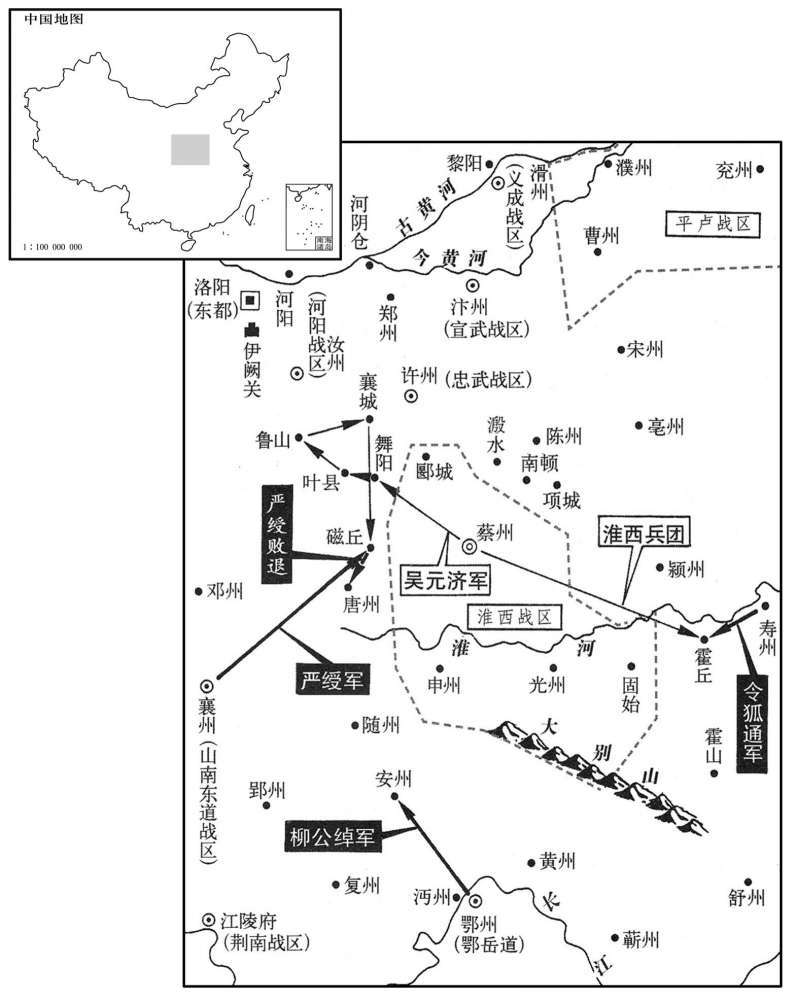
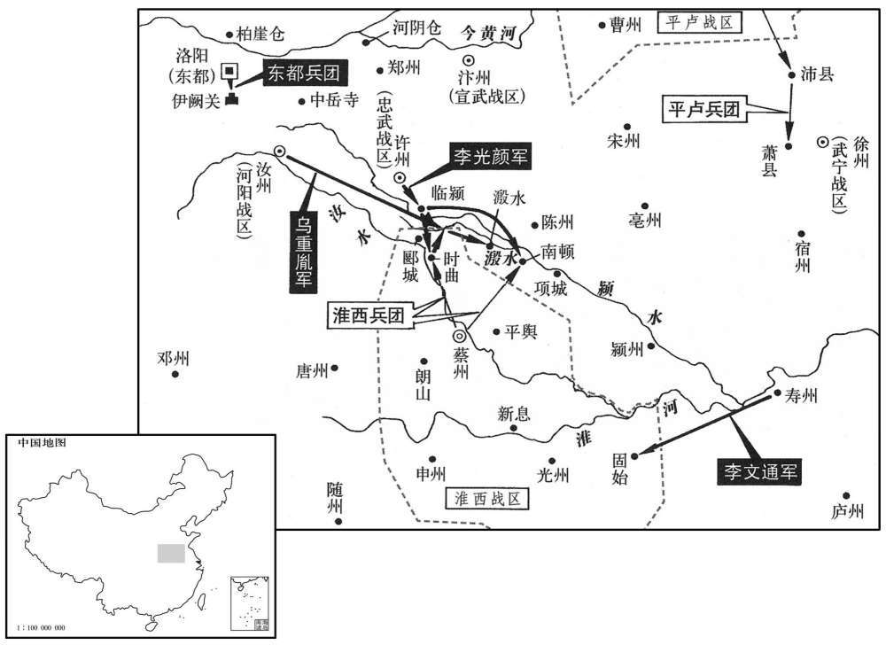
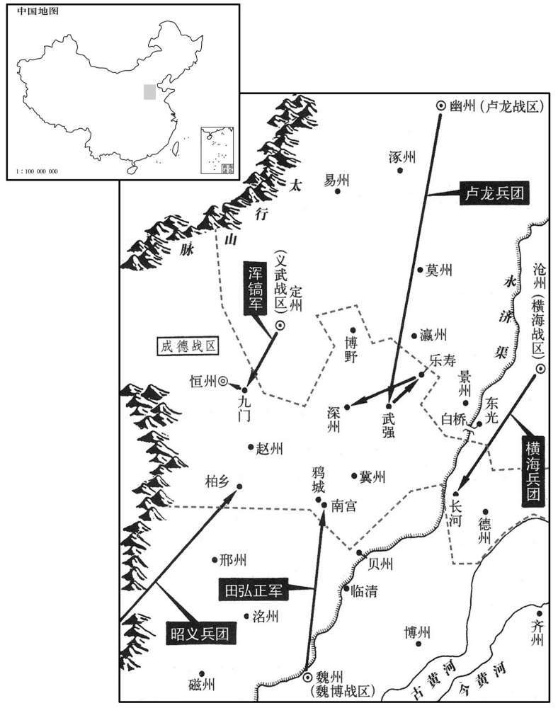
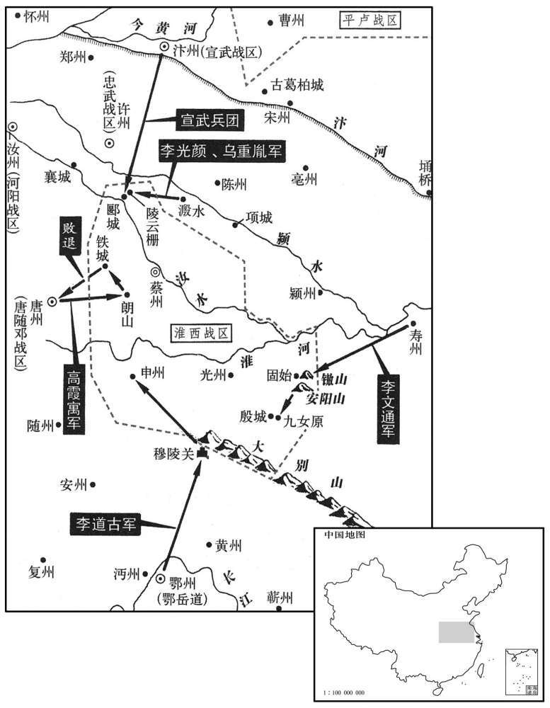
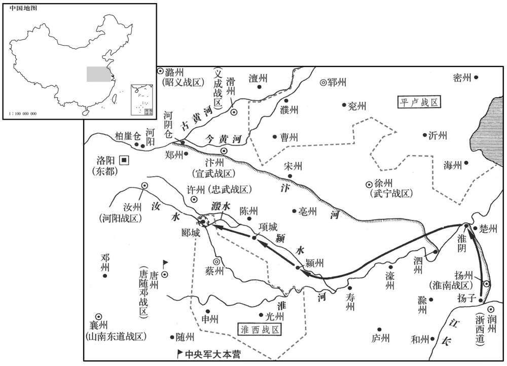

卷次与人物目录 / 卷239
资治通鉴 · 卷第二百三十九【唐纪五十五】
公元812年至公元816年 · 原文、白话与胡三省注
本页按胡注本编排保存全卷内容。白话采用本站所据译本，未可靠对应的内容另列说明；事件标题用于定位，并非原书文字。
本卷共136段原文，126段有译文对应，10段缺译或待核对。
卷第二百三十九【唐纪五十五】起玄黓执（壬辰）十月，尽柔兆涒滩（丙申），凡四年有奇。
卷首原文与注释
宪宗昭文章武大圣至神孝皇帝中之上
公元812年 · 唐宪宗昭文章武大圣至神孝皇帝元和七年
元和七年〔（壬辰、八一二）〕
上传原文的注释括号有异常，字符原样保留；无法可靠划分的段落默认全文显示。
本年记事分属相邻卷，按原书顺序分别保留：第238卷 · 第239卷。
本年事件索引（现代整理）
冬，十月，乙未，魏专监军以状闻，〔以委兵废怀谏立田兴之状闻．〕上亟召宰相，谓李绛曰：「卿揣魏博若符契。〔揣，初委翻。〕李吉甫请遣中使宣忍以观其变，李绛曰：「不可。今田兴奉其土地兵众，坐待诏命，不乘此际推心抚纳，结以大恩，必待敕使至彼，持将士表来为请节钺，然后与之，〔此大历、贞元之币也。为，子伪翻；下亦为、正为、度为、当为同。〕则是恩出于下，非出于上，将士为重，朝廷为轻，其感戴之心亦非今日之比也。机会一失，悔之无及！」吉甫素与枢密使梁守谦相结，守谦亦为之言于上曰：「故事，皆遣中使宣劳，〔劳，力到翻。〕今此镇独无，恐更不谕。」〔言恐其更不谕上意也。〕土竟遣中使张忠顺如委专宣慰，欲俟其还而议之。癸卯，李绛复上言：〔复，扶又翻。〕「朝廷恩威得失，在此一举，时机可惜，柰何弃之！利害甚明，愿圣心勿疑。计忠顺之行，甫应过陕，〔甫，始也。陕，失冉翻。〕乞明旦即降白麻除兴节度使，犹可及也。」上且欲除留后，绛曰：「兴恭顺如此，〔言兴守朝廷法令，申版籍，请官吏，异乎河北诸镇之为也。〕自非恩出不次，则无以使之感激殊常。」上从之。甲辰，以兴为魏博节度使。忠顺未还，制命已至魏州。兴感恩流涕，士众无不鼓舞。
冬季，十月，乙未（初十），魏博监军将魏博将士废黜田怀谏，拥立田兴的文状上报，宪宗连忙召集宰相前来，对李绛说：“你的揣测和魏博的事态就像符节的两部分相互吻合一样哩。”李吉甫请求派遣中使前去安抚，以便观察事态的变化，李绛说：“这样做不恰当。现在，田兴献出魏博的土地与兵马，正在等候诏书发布命令。如果不趁此时机诚心抚慰并接纳他，以隆厚的恩典维系他，而一定要等候陛下派出的使者到魏博，拿着将士们的上表回来请求任命田兴为节度使，然后再授给他这一职务，这就是恩惠来自下边，而不出自上边，将士的作用大，而朝廷的作用小，田兴对朝廷感激与爱戴的心意也是不能够与现在相比的。一旦失去这一时机，后悔也来不及了！”李吉甫平常与枢密使梁守谦相互勾结，梁守谦也替李吉甫向宪宗说：“根据惯例，对于这种情形，都是派遣中使前去慰劳，现在唯独不向魏博派遣中使，恐怕人们更加难以明白其中的道理了。”宪宗最后还是派遣中使张忠顺前往魏博安抚将士，准备等候张忠顺回朝以后再商议此事。癸卯（十八日），李绛再次进言说：“朝延施加恩典与声威的成功与失败，就在这一次行动。出现这一时机，是值得珍惜的，怎么能够将它放弃呢！哪种做法有利有害，是非常清楚的，希望陛下心中不要再有疑虑了。计算张忠顺的行程，现在应当刚过陕州，请陛下明天早晨便颁布白麻纸诏书，任命田兴为节度使，这是还来得及的。”宪宗打算暂且任命田兴为留后，李绛说：“田兴恭敬顺从到这般地步，若不肯不拘等次地施加恩典，自然无法使他感激朝廷的超常待遇。”宪宗听从了李绛的建议。甲辰（十九日），宪宗任命田兴为魏博节度使。张忠顺没有返回朝廷以前，宪宗的命令已经到达魏州，田兴因感激朝廷的恩典而流出了眼泪！将士们没有不欢欣雀跃的。
庚戌，更名皇子宽日恽，察曰悰，寰曰忻，寮日悟，审日恪。〔更，工衡翻。恽，于粉翻。
本段缺少可靠对应白话，原文完整保留；未使用生成译文。
李绛又言：「魏博五十余年不沾皇化，〔魏博自田承嗣以来倔强拒命，至是四十九年。〕一旦举六州之地来归，〔六州，魏、博、贝、卫、澶、相。〕刳河朔之腹心，倾叛乱之巢穴，不有重赏过其所望，则无以慰士卒之心，使四邻劝慕。请发内库钱百五十万缗以赐之。」左右宦官以为「所与太多，后有此比，将何以给之﹖」上以讈绛，〔语，牛据翻。〕绛曰：「田兴不贪专地之利，不顾四邻之患，归命圣朝，陛下柰何爱小费而遗大计，不以收一道人心！钱用尽更来，机事一失不可复追。〔复，扶又翻。〕借使国家发十五万兵以取六州，期年而克之，〔期，读曰囎。〕其费岂止百五十万缗而已乎！」上悦，日：「朕所以恶衣菲食，蓄聚货财，正为欲平定四方；〔为，于伪翻；下同。〕不然，徒贮之府库何为！」〔贮，丁吕翻。〕十一月，辛西，遣佑制诰裴度至魏博宣慰，以钱百五一万缗赏军士，六州百姓给复一年。〔复，方目翻。复，除其赋役也。〕军爱赐，欢声如雷。成德、兖郓使者数辈见之，相顾失色，叹曰：「倔强者果何益乎！」〔兖郓，印淄青、平卢军也。郓，音运。倔，其勿翻。强，其两翻。〕
李绛又说：“魏博已经有五十多年没有沾润着帝王的德化了，现在忽然带着魏、博、贝、卫、澶、相六州土地前来归顺，挖空了河朔地区的中心，倾覆了反叛作乱的巢穴，如果没有超过他们所希望的重重的奖赏，便无法安慰将士们的心意，并使四周相邻各道受到劝勉，感到羡慕。请陛下拨发内库钱一百五十万缗，颁赐给魏博。”宪宗亲近的宦官认为：“给与的赏赐太多，若以后再有此例，将拿什么给他们呢？”宪宗将宦官的话告诉了李绛，李绛说：“田兴不肯贪图专擅一地的好处，不顾四周相邻各道的祸患，归顺本朝，陛下怎么能够珍惜微小的费用，反而丢掉重大的谋划，不肯用这点钱财去收取一道的人心呢！钱财使用光了会重新得到的，而这一时机一旦失去，就不能够再追回来了。假如国家征发十五万兵马去攻取魏博六州，经过整整一年才战胜敌军，这需要的费用难道是一百五十万缗就可以止住的吗？”宪宗高兴了，就说：“朕穿粗劣的衣裳，吃薄味的食物，积蓄物资钱财的意图，正是为了平定各地。否则，将物资钱财白白储存在仓库中是为了什么呢？”十一月，辛酉（初六），宪宗派遣知制诰裴度前去安抚魏博，带去钱一百五十万缗，奖赏军中将士，对六州百姓免除一年的赋税徭役。将士们得到赏赐，发出了雷鸣般的欢呼声。成德、兖郓派来的好几个使者看到了这一场景，面面相觑，惊惶变色，叹息着说：“对朝廷刚强不屈的藩镇果真有什么好处吗！”
度为兴陈君臣上下之义，兴听之，终夕不倦，待度礼极厚，请度徧至所部州县，宣布朝命。朝，直遥翻。奏乞除节度副使于朝廷，诏以户部郎中河东胡证为之。〔证，之盛翻。〕兴又奏所部缺官九十员，请有司注拟，行朝廷法令，输赋税。田承嗣以来室屋僭侈者，皆避不居。
裴度为田兴讲述君臣之间的大义名分，田兴倾听着，整个晚上，都没有倦意。他对待裴度的礼数非常周全，还邀请裴度走遍他管辖的州县，向各处宣布朝廷的命令。田兴奏请朝廷任命节度副使，宪宗颁诏任命户部郎中河东人胡证出任此职。田兴还奏报部下缺少官员九十人，请求有关部门登录姓名，拟定官职，在魏博行使朝廷的法纪命令，向朝廷交纳赋税。田承嗣以来所建造的过度奢华的居室，田兴一概回避，不肯居住。
郓、蔡、恒遣游客间说百方，兴终不听。〔郓，李师道；蔡，吴少阳；恒，王承宗也。恒，户登翻。间，古苋翻。说，输苪翻。〕李师道使人谓宣武节度使韩弘曰：「我世与田氏约相保援，今兴非田氏族，又首变两河事，〔言田兴悉心奉朝廷，变两河藩镇故事。〕亦公之所恶也！〔恶，乌路翻。〕我将与成德合军讨之。」弘曰：「我不知利害，知奉诏行事耳。若兵北渡河，我则以兵东取曹州！」〔朝州，李师道巡属也。〕师道惧，不敢动。
郓州李师道、蔡州吴少阳、恒州王承宗派遣游说之士，想方设法私下劝说田兴，田兴始终不肯听从。李师道让人告诉宣武节度使韩弘说：“我家世代与田氏约定相互保全，彼此援助。现在，田兴并不出于田氏家族，又第一个改变了河南、河北的先例，这也是您所憎恶的啊！我准备与成德会合兵马，讨伐田兴。”韩弘说：“我不知道你说的这些利弊得失，只知道遵照诏书办事而已。假如你的兵向北渡过黄河，我便领兵东进，攻打曹州！”李师道害怕，没敢用兵。
田兴既葬田季安，戏田怀谏于京师。辛巳，以怀谏为右监门卫将军。
田兴安葬了田季安以后，便将田怀谏往京城。辛巳（二十六日），宪宗任命田怀谏为右监门卫将军。
李绛奏振武、天德左右良田可万顷，请择能吏开置营田，可以省费足食，上从之。绛命度支使卢坦经度用度，〔度支、经度，皆徒洛翻。〕四年之间，开田四千八百顷，收谷四千余万斛，〔「千」，当做「十」。〕岁省度支钱二十余万缗，边防赖之。
李绛奏称，振武、天德周围的良田可达一万顷，请求选择干练的官吏开设屯田，可以节省开支，使粮食充足，宪宗听从了他的建议。李绛命令度支使卢坦经营规划所需费用。在四年时间里，开辟田地四千八百顷，收获谷物四千多万斛，每年节省度支拨钱二十多万缗，边防都仰仗着屯田的收成。
上尝于延英谓宰相曰：「卿辈当为朕惜官，〔为，于伪翻。〕勿用之私亲故。」李吉甫、权德舆皆谢不敢。李绛曰：「崔佑甫有言，『非亲非故，不谙其才。』谙者尚不与官，不谙者何敢复与！但问其才器与官相称否耳。〔谙，乌含翻。复，扶又翻。称，尺证翻。〕若避亲故之嫌，使圣朝亏多士之美，此乃偷安之臣，非至公之道也。苟所用非其人，则朝廷自有典刑，谁敢逃之！」上曰：「诚如卿言。」
宪宗曾经在延英殿对宰相们说：“你们这些人应当替朕珍惜官位，不要用官位偏袒亲戚故旧。”李吉甫、权德舆都推脱说自己没有那样的胆量。李绛说：“崔甫说过：‘既不是亲属，又不是故交，无法了解一个人的才能。’对自己了解的人尚且不能够授予官职，对不了解的人又怎么敢授给官职呢？只须过问一个人的才能和器识与所授官职是否相称而已。倘若规避亲戚故旧的嫌疑，使本朝缺欠人才济济的局面，这便是苟求自安的臣下，并不符合大公无私的原则啊！如果任用的人是不合适的，朝廷自然会有刑罚相加，有谁敢逃避呢！”宪宗说：“诚然如你所说。”
是岁，吐蕃寇泾州，及西门之外，〔先寇泾州界，进及泾州西门之外。〕驱掠人畜而去。上患之，李绛上言：「京西、京北皆有神策镇兵，〔京西，凤翔、秦、陇、原、泾、渭也。京北，邠、宁、丹、延、鄜、坊、庆、灵、盐、夏、绥、银、宥也。镇兵注已见前。〕始，置之欲以备御吐蕃，使与节度使掎角相应也。今则鲜衣美食，坐耗县官，每有寇至，节度使邀与俱进，则云申取中尉处分；〔唐神委镇兵分屯于外，皆属左、右神委中尉。处，昌吕翻。分，扶问翻。〕比其得报，虏去远矣。〔比，必利翻，及也。〕纵有果锐之将，闻命奔赴，节度使无刑戮以制之，相视如平交，左右前却，莫肯用命，何所益乎！请据所在之地士马及衣粮、器械皆割隶当道节度使，使号令齐壹，如臂之使指，则军威大振，虏不敢入寇矣。」上曰：「朕不知旧事如此，当亟行之。」既而神策军骄恣日久，不乐隶节度使，〔乐，音洛。〕竟为宦者所沮而止。
本年，吐蕃侵犯泾州，一直打到西门以外，驱赶俘掠人口与牲畜离去，宪宗为此事甚为担忧。李绛进言说：“京城西面和京城北面都有神策军赶镇驻守的兵马。起初，朝廷将神策军安置到各军镇，是打算防御吐蕃，使神策军与节度使的兵马形成相互呼应夹击敌军的形势。如今神策军穿好的，吃好的，无所事事地消耗国家的物资供给。每当有敌寇到来时，节度使邀请神策军与自己共同进军，神策军却说需要申报上去，听取中尉的处理。及至神策军得到中尉的答复，吐蕃已经离开很远了。纵然神策军中也有果决勇猛的将领，得到命令便奔赴敌军，但是节度使无法使用刑杀的权力来控制他们。这些将领将节度使看作平等交往的人物，节度使支使他们前进或撤退时，他们不肯服从命令，这有什么益处呢？请陛下根据神策军的驻扎地点，将战士、马匹、衣服、口粮、器械等一概分割给本道节度使管辖，使号令统一，犹如胳膊指使手指一般，军队的声威便会大大振作起来，吐蕃就不敢前来侵犯了。”宪宗说：“朕不知道以往的制度竟是这个样子，应当赶紧实行你的建议。”不久，由于神策军骄横放纵得时间长了，不愿意隶属节度使，终于因受到宦官的阻挠而没有实行下去。
译本中未与胡注本可靠对应的内容
以下另列供核对版本差异，不并入胡注本正文。
译本所附古文
[2]庚戌，更名皇子宽曰恽，察曰，寰曰忻，寮曰悟，审曰恪。
译本白话
庚戌（二十五日），宪宗为皇子更改名字，李宽称作李恽，李察称作李，李寰称作李忻，李寮称作李悟，李审称作李恪。
公元813年 · 唐宪宗昭文章武大圣至神孝皇帝元和八年
八年〔（癸巳、八一三）〕
上传原文的注释括号有异常，字符原样保留；无法可靠划分的段落默认全文显示。
本年事件索引（现代整理）
春，正月，癸亥，以博州刺史田融为州刺史。〔融，兴之兄也。〕融、兴幼孤；融长，养而教之。〔兄弟皆幼失父母，而兄年差长，故长养其弟而教之。长，知丈翻。〕兴尝于军中角射，〔角，竞也。角射者，以中为胜。〕一军莫及。融退而抶之〔抶，丑栗翻，打也。〕曰：「尔不自晦，祸将及矣！」故兴能自全于猜暴之时。〔猜暴之时，谓田委安时也。
两版字句有差异，建议核对原文。
春季，正月，癸亥（初九），宪宗任命博州刺史田融为相州刺史。田融是田兴的哥哥。田融与田兴幼年丧父，田融年长，便抚养教育田兴。有一次，田兴与军中将士比赛射箭，全军将士都赶不上他。回去以后，田融用鞭子抽打他，还说：“你不能够收敛自己的锋芒，祸殃就要到来了！”所以，田兴能够在田季安猜疑而横暴时，将自己保全下来。
勃海定王元瑜卒，弟言义权知国务。庚午，以言义为勃海王。
勃海定王大元瑜去世，弟弟大言义暂时代理执掌国家事务。庚午（十六日），宪宗任命大言义为勃海王。
李吉甫、李绛数争论于上，前礼部尚书、同平章事权德舆居中无所可否；上鄙之。〔数，所角翻。〕辛未，德舆罢守本官。
李吉甫与李绛屡次在宪宗面前争论，礼部尚书、同平章事权德舆置身中间，没有表示过赞同或反对，宪宗因此而轻视他。辛未（十七日），权德舆被罢免宰相职务，仍然担任原有的官职。
辛卯，赐魏博节度使田兴名弘正。
辛卯（疑误），宪宗向魏博节度使田兴颁赐名字，叫田弘正。
司空、同平章事于拐久留长安，郁郁不得志。〔二年拐入朝，见二百三十二卷。〕有梁正言者，自言与枢密使梁守谦同宗，能为人属请，〔为，于伪翻；下同。属，之欲翻。〕拐使其子太常丞敏重赂正言，求出镇。久之，正言诈渐露，敏索其赂不得，〔索，山客翻。〕诱其奴，支解之，弃溷中。〔诱，音酉。溷，户困翻，厕也。〕事觉，拐帅其子殿中少监季友等素服诣建福门请罪，门者不内；〔帅，读曰率。唐大明宫端门曰丹凤门，其西曰建福门。，内即纳字也。〕退，负南墙而立，遣人上表，合门以无印引不受；〔唐制；凡四方章表，皆合门受而进之。拐方请罪，既无职印，又无内引，所以不受。〕日暮方归，明日，复至。〔复，扶又翻。〕丁酉，拐左授恩王傅，仍绝朝谒；〔朝，直遥翻。〕敏流雷州，〔旧志：雷州，至京师六千五百一十二里。〕季友等皆贬，官僮奴死者数人；敏至秦岭而死。〔自蓝田关南出度秦岭。〕
司空、同平章事于长时间留在长安，自觉忧闷，难偿平生志愿。有一个叫梁正言的人，自称与枢密使梁守谦是本家，能够替别人托办各种事情，于便让他的儿子太常丞于敏重重地贿赂梁正言，希图出任节度使。时间长了，梁正言的骗术逐渐败露了，于敏不能够将贿赂索取回来，便诱使梁正言的奴仆，将梁正言的四肢分解了，丢弃到厕所中。事情终于被发觉了，于带领他的儿子殿中少监于季友等人，穿着白色丧服前往建福门请求治罪，守门人不肯让他们进去。退下来后，于背倚南墙站立着，派人进献表章，阁门的值班人因表上没有印符，又没有内部人援引，因而不肯接受。直到日暮，于等才返回。第二天，又再次前来。丁酉（疑误），于被降职为恩王傅，并禁止他入朝谒见；于敏被流放雷州，于季友等人都被贬官，奴仆被处死的有几个人。于敏刚到秦岭便死去。
事连僧鉴虚。鉴虚自贞元以来，以财交权幸，受方镇赂遗，〔遗，唯季。〕厚自奉养，吏不敢诘。至是，权幸争为之言，上欲释之，中丞薛存诚不可。上遣中使诣台宣旨曰：「朕欲面诘此僧，非释之也。」存诚对曰：「陛下必欲面释此僧，请先杀臣，然后取之，不然，臣期不奉诏。」上嘉而从也。三月，丙辰，杖杀鉴虚，没其所有之财。〔考异曰：实录在二月。按长历，二月乙酉朔，三月甲寅朔。丙辰，三月三日。甲子，武元衡入佑政事，十一日也。实录脱不书月耳。
两版字句有差异，建议核对原文。
事情牵连到僧人鉴虚。自从贞元年间以来，鉴虚凭着资财与拥有权势、取得宠幸的人们交结，收受节度使贿赂的财物，使自己日常获得优厚的供养，吏人们谁也不敢追问。至此，有权势、得宠幸的人们争着替鉴虚讲情，宪宗也打算将鉴虚释放出来，御史中丞薛存诚认为是不适当的。宪宗派遣中使前往御史台宣布诏旨说：“朕打算当面责问这个僧人，并不是要释放他。”薛存诚回答说：“如果陛下一定要当面释放这个僧人，请先将我杀掉，然后再将他放走。否则，我定然不肯接受诏命。”宪宗嘉许并听从了他的请求。三月，丙辰（初三），将鉴虚用棍棒笞打而死，没收了他所有的资财。
甲子，征前西川节度使、同平章事武元衡入佑政事。〔元和二年，武元衡出镇西川，至是召还。〕
甲子（十一日），宪宗征召前任西川节度使、同平章事武元衡入朝执掌政事。
夏，六月，大水。上以为阴盈之象，辛丑，出宫人二百车。
夏季，六月，发生了严重的水灾，宪宗认为这是阴气满盈的象征。辛丑（初五），宪宗将二百车宫中妇女打发出宫。
秋，七月，〔【章：甲十一行本「月」下「有辛酉」二字；乙十一行本同；张校同；退斋校同。】〕振武节度使李光进请修受降城，兼理河防。〔理，治也。〕时受降城为河所毁，〔河毁受降城见上卷七年。〕李吉甫请徙其徒于天德故城，〔天德故城，在东受降城西二百里大同川。干元后，徙天德军于永济栅。宋白续通典作「永清栅」。其城，则隋大同城之旧墟。〕李绛及户部侍郎卢坦以为：「受降城，张仁愿所筑，〔事见二百九卷中宗景龙元年。〕当碛口，据虏要冲，美水草，守边之利地。今避河患，退二三里可矣，柰何舍万代永安之策，徇一时省费之便乎！况天德故城僻处确瘠，〔处，昌吕翻。确，克角翻，硗确也。瘠，土薄也。去河绝远，烽候警急不相应接，虏忽唐突，势无由知，是无故而蹙国二百里也。」及城使周怀义奏利害，与绛、坦同。上卒用吉甫策，〔卒，子恤翻。以受降城骑士隶天德军。李绛言于上曰：「边军徒有其数而无其实，虚费衣粮，将帅但缘私役使，〔缘私者，并缘公役之名而私使之。〕聚货财以结权幸而已，未尝训练以备不虞，此不可不于无事之时预象留圣意也。」时受降城兵籍旧四百人，及天德军交兵，此有五十人，〔考异曰：「实录云：「李光进请修东受降城兼理河防。」又云：「以中受降城及所管骑士一千一百四十人隶于天德军。」旧传：「卢坦与李绛謟议，以为西城张仁愿所筑，不可废。」三者不同，莫知孰是。今但云受降城，所关疑也。又李司空论事云：「中城旧属振武有镇兵四百人，其时割属天德，交割惟有五十人。」人数如此不同，或者一千一百四十人是三城都数耳。〕器械止有一弓，自余称是。〔称，尺证翻。〕故绛言及之。上惊曰：「边兵乃如是其虚邪！卿曹当加按阅。」会绛罢相而止。
本段缺少可靠对应白话，原文完整保留；未使用生成译文。
乙巳，废天威军，〔元和初，并左、右神威为一军，号天威军。神威军，本殿前射生军也。〕以其众隶神策军。
乙巳（疑误），朝廷废除了天威军，将天威军的部众隶属于神策军。
丁未，辰、溆贼帅张伯靖请降。〔辰、溆贼反，事始土卷六年。〕辛亥，〔【章：甲十一行本「辛」上有「九月」二字；乙十一行本同；孔本同；张校同。】〕以伯靖为归州司马，委荆南军前驱使。〔委，属也，付也。〕
丁未（疑误），辰州与涂州两地蛮人的首领张伯靖请求归降。辛亥（疑误），宪宗任命张伯靖为归州司马，交付荆南节度使军前听候驱遣。
初，吐蕃欲作乌兰桥，〔新志：会州乌兰县有乌兰关，在县西南。吐蕃于河上作桥。〕先贮材于河侧，〔贮，丁吕翻。〕朔方常潜遣人投之于河，终不能成。虏知朔方、灵盐节度使不佖贪，〔佖，支笔翻，又频笔翻。〕先厚赂之，然后并力成桥，仍筑月城守之。自是朔方御寇不暇。
当初，吐蕃准备建造乌兰桥，事先在黄河边上储存木材，朔方经常暗中派人将木材投入黄河，乌兰桥到底没有能够造成。吐蕃得知朔方、灵盐节度使王贪婪，便先去重重地贿赂他，然后全力将乌兰桥造成，还修筑了新月形的城墙守卫着它。从此，朔方经常需要抵御吐蕃入侵，再也没有闲暇的时候了。
冬，十月，回鹘发兵度碛南，自柳谷西击吐蕃。〔新志：西州交河县北二百一十里，经柳谷渡。〕壬寅振武、天德军奏回鹘数千骑至鷿鹈泉，〔鷿鹈泉，在西受降城北三百里。鷿，扶历翻。鹈，徒奚翻。〕边军戒严。
冬季，十月，回鹘派兵来到大漠南面，由柳谷西进，攻击吐蕃。壬寅（二十三日），振武、天德军奏称有回鹘骑兵数千人来到鹈泉，边疆上的军队都在警戒防备。

振武节度使李进贤，不恤士卒；判官严澈，绶之子也，〔于时严绶尚在。绶，音受。〕以刻核得幸于进贤。进贤使牙将杨遵宪将五百骑趣东受降城以备回鹘，所给资装多虚估；〔资装不给本色，虚估其价，给以他物。趣，七喻翻。〕至鸣沙，遵宪屋处〔处，昌吕翻。〕而士卒暴露；众发，夜，聚薪环其屋而焚之，〔环，音宦。〕卷甲而还。〔还，从宣翻，又如字。〕庚寅夜，焚门，攻进贤，进贤踰城走，军士屠其家，并杀严澈。进贤奔静边军。〔静边军在云州西一百八十里。〕
振武节度使李进贤不体恤将士。判官严澈是严绶的儿子，因待人苛刻而得到李进贤的宠爱。李进贤让牙将杨遵宪带领骑兵五百人奔赴东受降城，防备回鹘，供给他的物资装备多不是原物，而是经过虚估价钱后另以他物配给的。来到鸣沙时，杨遵宪住在房屋里，但将士们留在露天地里。大家发怒了，在夜间堆聚柴草，围绕着房屋放火焚烧杨遵宪，收起铠甲，返回振武。庚寅（十一日），夜晚，返回的将士焚烧大门，进攻李进贤，李进贤翻越城墙逃走。将士们屠杀了李进贤的家口，并且杀死了严澈。李进贤逃奔静边军。
群臣累表请立德妃郭氏为皇后。一以妃门宗强盛，〔妃，郭暧之女，子仪之孙女也。〕死正位之后，后宫莫得进，托以岁时禁忌，竟不许。
群臣屡次上表请求将德妃郭氏立为皇后。宪宗认为郭德妃宗族门户强盛，恐怕郭德妃居正位后，内宫的嫔妃不能够接近他了，便借口时日的忌讳，始终不肯答应。
丁酉，振武监军骆朝宽奏乱兵已定，请给将士衣。上恋，以夏绥节度使张煦为振武节度使，〔煦，吁句翻。〕将夏州兵二千赴镇，仍命河东节度使王锷以兵二千纳之，听以便直从事。骆朝宽归罪于其将苏若方杀之。
丁酉（十八日），振武监军骆朝宽奏称变乱的士兵已经平定，请求给将士们供应服装。宪宗大怒，任命夏绥节度使张煦为振武节度使，带领夏州兵马二千人奔赴振武，还命令河东节度使王锷率领兵马二千人接纳张煦，任凭他见机行事。骆朝宽将罪责都加给将领苏若方，将他杀掉了。
发郑滑、魏专卒凿黎阳古河十四里，以纾滑州水患。〔大河故渎径黎阳山之东，后南徙，为滑州患，故复凿古河。〕
朝廷征发郑滑、魏博士兵开凿黎阳古黄河河道十四里，以便缓解滑州的水灾。
上问宰相：「人言外间朋党大盛，何也﹖」李绛对曰：自古人君所甚恶者，莫若人臣为朋党，故小人谮君子必曰朋党。何则﹖朋党言之则可恶，〔恶，乌路翻。〕寻之则无迹故也。东汉之末，凡天下贤人君子，官官皆谓之党人而禁锢之，遂以亡国。〔见汉桓、灵二帝纪。〕此皆群小欲害善人之言，愿陛下深之！夫君子固与君子合，岂可必使之与小人合，然后谓之非党邪！」
宪宗询问宰相说：“人们说外面朋党集团大大兴起，这是为什么呢？”李绛回答说：“自古以来，人君特别憎恶的，以人臣结成朋党集团为甚，所以，小人诬陷君子，肯定要说他属于朋党集团。为什么要这样做呢？这是因为，朋党集团谈论起来虽然是可恶的，寻找起来却没有痕迹。东汉末年，凡是天下的贤人和君子，宦官都称他们为党人，因而勒令对他们永不任用，东汉便因此灭亡。这都是众小人打算谋害好人的说法，希望陛下深入地考察此事。一般说来，君子固然与君子相合，难道能够一定使君子与小人相合，然后才能够说君子不属于朋党集团吗！”
译本中未与胡注本可靠对应的内容
以下另列供核对版本差异，不并入胡注本正文。
译本所附古文
[8]秋，七月，振武节度使李光进请修受降城，兼理河防。时受降城为河所毁，李吉甫请徒其徒于天德故城，李绛及户部待郎卢坦以为：“受降城，张仁愿所筑，当碛口，据虏要冲，美水草，守边之利地。今避河患，退二三里可矣，奈何舍万代永安之策，徇一时省费之便乎！况天德故城僻处确瘠，去河绝远，烽侯警急不相应接，虏忽唐突，势无由知，是无故而蹙国二百里也。”及城使周怀义奏利害，与绛、坦同。上卒用吉甫策，以受降城骑士隶天德军。
译本白话
秋季，七月，振武节度使李光进请求修筑受降城，同时治理黄河的堤防。当时，受降城被黄河毁坏，李吉甫请求将李光进的部众迁移到天德军的旧城去。李绛与户部侍郎卢坦认为：“这座受降城是张仁愿修筑起来的，地处大漠的出口，占据着控制异族的交通紧要之地，水草丰美，是守卫边防的好地方。现在，为了避开黄河的危害，后退两三里地就行了，怎么能够舍弃万世永远安定的大计，曲从暂时节省开支的便利呢！何况天德军旧城处于荒远之地，土质瘠薄多石，距离黄河极远，烽火台示警告急时，不能够相互呼应，异族忽然前来横冲直撞，势必无法得知，这是毫无原由地使国家减缩了二百里的土地啊！”及至受降城使周怀义奏陈利弊得失，所讲的与李绛、卢坦相同。但是，宪宗最终还是采用了李吉甫的策划，将受降城的骑兵隶属于天德军。
李绛言于上曰：“边军徒有其数而无其实，虚费衣粮，将帅但缘私役使，聚货财以结权幸而已，未尝训练以备不虞，此不可不于无事之时豫留圣意也。”时受降城兵籍旧四百人，及天德军交兵，止有五十人，器械止有一弓，自余称是。故绛言及之。上惊曰：“边兵乃如是其虚邪！卿曹当加按阅。”会绛罢相而止。
李绛对宪宗说：“边防上的军队空有数额，实际没有那么多士兵，白白浪费衣服与口粮。将帅们只知道假公济私，使唤士兵，积聚物资钱财，用以交结有权势、得宠幸的人们，却不曾训练士兵，以防备意外的事情发生。这种情形，不能不在没有事端时请陛下预先留意。”当时，受降城的士兵名册原有四百人，及至与天德军移交兵员时，只有五十人，军用器具只有一张弓，其余的东西与此相称，所以李绛才提到此事。宪宗惊讶地说：“边境的兵马竟然是这般空虚吗！你们应当加以按察。”适逢李绛被罢免了宰相的职务，于是此事便作罢了。
公元814年 · 唐宪宗昭文章武大圣至神孝皇帝元和九年
九年〔（甲午、八一四）〕
上传原文的注释括号有异常，字符原样保留；无法可靠划分的段落默认全文显示。
本年事件索引（现代整理）
春，正月，甲戌，王锷遣兵五千会张煦于善羊栅。〔「善羊」，当作「善阳」。唐朔州洽善阳县，西北至单于府百二十里。栅盖立于县界。〕乙亥，煦入单于都护府，〔振武节度使，治单于都护府。〕诛乱者苏国珍等二百五十三人。二月，丁丑，贬李进贤为通州剌史。甲午，骆朝宽坐纵乱者，杖之八十，夺色，配役定陵。〔夺色者，夺其品色也。〕
春季，正月，甲戌（二十六日），王锷派遣兵马五千人在善羊栅与张煦会合。乙亥（二十七日），张煦进入单于都护府，诛杀变乱者苏国珍等二百五十三人。二月，丁丑（疑误），宪宗将李进贤贬为通州刺史。甲午（十六日），骆朝宽因放纵叛乱者获罪，将他杖责八十，剥夺品色，发配到定陵服役。
李绛屡以足疾辞位；癸卯，罢为礼部尚书。
李绛因脚病屡次推辞官位。癸卯（二十五日），李绛被罢为礼部尚书。
初，上欲相绛，先出吐承璀为淮南监军，见上卷六年。相，息亮翻；下同。〕至是，上召还承璀，先罢绛相。甲辰，承璀至京师，复以为弓箭库使、〔观李绛立朝末末，亦庶乎有大臣之节矣。〕左神策中尉。〔承璀以袁师罢中尉为弓箭库使，今遂兼为之，此宪宗之巧，盖持两端以观朝议也。李绛既罢，谁敢复以为言乎！〕
两版字句有差异，建议核对原文。
当初，宪宗打算任命李绛为宰相，事先让吐突承璀出任淮南监军。至此，宪宗将吐突承璀召回，事先免除了李绛的宰相职务。甲辰（二十六日），吐突承璀来到京城，宪宗重新任命他为弓箭库使、左神策军中尉。
李吉甫奏：「国家旧置六胡州于灵、盐之境，〔调露元年，于灵、夏南境以降突厥置州、丽州、含州、塞州、依州、契州，以唐人为剌史，谓之六胡州。盐州与灵、夏接境。〕开元中废之，更置宥州以领降户；天宝中，宥州寄理于经略军，〔长安四年，并六胡州为匡、长二州。开元二十六年，以之渥州，置怀恩县，带宥州，县管内有榆多勒城。天宝中，王忠嗣奏置经略军，在宥州故城东北三百里，未白曰：宥州应接天德，南援夏州，治长泽县，本汉三寺县地。〕宝应以来，因循遂废。今请复之，以备回鹘，抚党项。」上从之。〔党，底朗翻。〕夏，五月，庚申，复置宥州，理经略军，取鄜城神策屯兵九千以实之。〔大历六年，置肃戎军于鄜州之鄜城。〕
李吉甫上奏说：“以往，国家在灵州和盐州境内设置了六胡州，开元年间将六胡州废除，又设置宥州来统领归降的人户。天宝年间，宥州由经略军遥控治理。宝应年间以来，由于墨守旧法，于是便被废弃了。现在，我请求恢复以往的设置，以便防备回鹘，安抚党项。”宪宗听从了他的建议。夏季，五月，庚申（十四日），朝廷重新设置宥州，治所设在经略军，调来屯驻城的神策军兵九千人，以便充实宥州。
先是，回鹘屡请昏，〔先，悉荐翻。〕朝廷以公主出降，其费甚广，故未之许。礼部尚书李绛上言，以为：「回鹘凶强，不可无备；淮西穷蹙，事要经营。今江、淮大县，岁所入赋有二十万缗者，足以备降主之费，陛下何爱一县之赋，不以羁縻劲虏！回鹘若得许昏，必喜而无猜，然后可以修城堑，蓄甲兵，边备既完，得专意淮西，功必万全。今既未降公主而虚弱西城；〔西城，请西爱降城。〕碛路无备，更修天德以疑虏心。〔谓徙爱降城于天德也。万一比边有警，则淮西遗丑复延岁月之命矣！〔复，扶又翻。〕傥虏骑南牧，国家非步兵三万，骑五千，则不足以抗御！借使一岁而胜之，其费岂特降主之比哉！」上不听。
在此之前，回鹘屡次请求通婚，朝廷因公主出国下嫁，开支很大，所以没有答应。礼部尚书李绛进言认为：“回鹘凶猛强悍，对他们不能够没有防备。淮西困惑犹豫，其中的事情需要图谋规划。如今江淮地区的大县，每年上缴的赋税有达到二十万缗的，足够备办下嫁公主的费用，陛下为什么要珍惜一个县的赋税，不肯拿来维系强劲的回鹘呢？假如回鹘得到通婚的许可，肯定感到高兴，不再猜疑．在此之后，才可以修治城池沟堑，积蓄铠甲兵器。在边疆的防备巩固后，才能够一心一意地对付淮西，必定获得成功，万无一失。既然如今没有下嫁公主，又使西受降城虚弱难支，对大漠的通路毫无防备，还要修筑天德城，使异族心中感到疑虑。万一北部边疆出现警报，淮西的残余小丑便又能够苟延残喘下去了！倘若回鹘的骑兵南来放牧，国家没有步兵三万人、骑兵五千人，就不够抵御他们！假使需要用一年时间战胜回鹘，所需要的费用又怎么能与仅仅下嫁公主的开销相比呢？”宪宗不肯听从。
乙丑，桂王纶薨。〔纶，上弟也。〕
乙丑（十九日），桂王李纶去世。
六月，壬寅，以河中节度使张弘靖为刑部尚书、同平章事。弘靖，延赏之子也。〔张延赏相德宗于贞元之间。〕
六月，壬寅（二十七日），宪宗任命河中节度使张弘靖为刑部尚书、同平章事。张弘靖是张延赏的儿子。
翰林学士独孤郁，权德舆之伲也。上叹郁之才美曰：「德舆得伲郁，我反不及邪！」先是尚主皆取贵戚勋臣之家，〔先，悉荐翻。〕上始命宰相选公卿、大夫子弟文雅可居清贯者；〔史照曰：贯，事也。清贯，犹言清职也。〕诸家多不愿，惟杜佑孙司议郎悰不辞。〔悰，藏宗翻。〕秋，七月，戊辰，以悰为殿中少监、驸马都尉，尚岐阳公主。公主，上长女，郭妃所生也。八月，癸巳，成昏。公主有贤行，〔行，下孟翻。〕杜氏大族，尊行不翅数十人，〔尊行之行，下浪翻。不翅，与不啻同。〕公主卑委怡顺，一同家人礼度，二十年间，人未尝以丝发间指为贵骄。始至，则与悰谋曰：「上所赐奴婢，卒不肯穷屈，〔卒，子恤翻，终也。〕奏请纳之，悉自市寒贱可制指者。」〔制指，谓可制御而指使者也。〕自是闺门落然不闻人声。
翰林学士独孤郁是权德舆的女婿。宪宗赞叹独孤郁的才华说：“权德舆能够使独孤郁作女婿，我反而赶不上权德舆了吗？”在此之前，公主下嫁，都是选取皇家内外亲族以及功臣家的子弟。至此，宪宗才命令宰相选择公卿、大夫家的温文尔雅、可以置身清流的子弟。然而，各家多不愿意，只有杜佑的孙子司议郎杜没有推辞。秋季，七月，戊辰（二十三日）宪宗任命杜为殿中少监、驸马都尉，让他娶岐阳公主为妻。岐阳公主是宪宗的大女儿，为郭德妃所生。八月，癸巳（十九日），杜与岐阳公主成婚。岐阳公主举止贤淑，杜氏是一个庞大的家族，行辈高于她的不只数十人，岐阳公主对待他们，谦恭随和，一概如同家里人的礼数，在二十年里，人们不曾因丝毫的嫌隙而指责她恃贵骄慢。才到杜家时，岐阳公主就与杜商议说：“皇上赐给我们的奴婢，是终究不肯屈从的，可以奏请皇上将他们收回去，我们自己再悉数购买出身低微、可以指使的奴婢吧。”自此，闺阁门户清静，连人们说话的声音都听不到。
闰月，丙辰，彰义节度使吴少阳薨。〔考异曰：实录，少阳卒在闰月己丑下，壬辰上，而并元济焚舞阳言之。统纪、旧纪，少阳卒皆在九月。按旧传曰：〔「少阳卒，凡四十日，不为辍朝。」唐纪：「张弘靖请为少阳废朝赠官。」而实录「辛丑赠少阳右仆射。」然则己丑至辛丑，才十二日耳。岂容四十日不辍朝乎！今从新纪。〕少阳在蔡州，阴聚亡命，牧养马骡，时抄掠寿州茶山以实其军。〔寿州有茶山。抄，楚交翻。〕其子摄蔡州刺史元济，匿丧，以病闻，自领军务。
闰八月，丙辰（十二日），彰义节度使吴少阳去世。吴少阳任职蔡州，暗中聚合逃亡的罪犯，放养骡子、马匹，时常抢动寿州茶山的财物来充实军需。他的儿子摄蔡州刺史吴无济，隐瞒了吴少阳的死讯，以吴少阳患病上报朝廷，由自己统领军中事务。
上自平蜀，〔元和初平蜀。〕即欲取淮西。淮南节度使李吉甫上言：「少阳军中上下携离，请徙理寿州以经营之。」〔淮南节度使治扬州，欲徙治寿州以经略淮西。〕会朝廷方讨王承宗，〔事见上卷四年、五年。〕未暇也。及吉甫入相，田弘正以魏博归附。〔事见七年。〕吉甫以为汝州扞蔽东都，河阳宿兵，本以制魏博，今弘正归顺，则河阳为内镇，不应屯重兵以示猜阻。辛酉，以河阳节度使乌重胤为汝州刺史，充河阳、怀、汝节度使，徙理汝州。己巳，弘正检校右仆射，赐其军钱二十万缗，弘正曰：「吾未若移河阳军之为喜也。」〔喜者，喜朝廷之不猜防魏博。〕
自从平定蜀中刘辟以来，宪宗就打算攻取淮西。淮南节度使李吉甫进言说：“吴少阳军中将士对上面已有背叛之心，请将淮南的治所迁移到寿州去，以便让我来经略规划淮西。”适逢朝廷正在讨伐王承宗，没有余暇考虚他的建议。及至李吉甫担任宰相后，田弘正率领魏博归顺了朝廷，李吉甫认为：“东都有汝州护卫着，在河阳屯驻兵马，本来是为了控制魏博的。现在，田弘正归顺了朝廷，河阳便成了内地的军镇，不应该屯驻重兵，显示对魏博的猜疑。”辛酉（十七日），宪宗任命河阳节度使乌重胤为汝州刺史，充任河阳、怀、汝节度使，将治所迁移汝州。己巳（二十五日），加封田弘正检校右仆射，赐给魏博军钱二十万缗。田弘正说：“没有比迁移河阳军更使我高兴的啦。”

九月，庚辰，以洺州刺史李光颜为陈州刺史，充忠武都知兵马使；〔九域志：陈州，西南至蔡州一百九十里。〕以泗州刺史令狐通为寿州防御使。通，彰之子也。〔肃宗时，令狐彰背史思明归顺。〕丙戌，以山南东道节度使袁滋为荆南节度使，以荆南节使严绶为山南东道节度使。
九月，庚辰（初七），宪宗任命州刺史李光颜为陈州刺史，充任忠武都知兵马使，任命泗州刺史令狐通为寿州防御使。令狐通是令狐彰的儿子。丙戌（十三日），宪宗任命山南东道节度使袁滋为荆南节度使，任命荆南节度使严绶为山南东道节度使。
吴少阳判官苏兆、杨元卿、大将侯惟清皆劝少阳入朝；元济恶之，〔恶，乌路翻。〕杀兆，囚惟清。元卿先奏事在长安，具以淮西虚实及取元济之策告李吉甫，请讨之。时元济犹匿丧，元卿劝吉甫，凡蔡使入奏者，所在止之。少阳死近四十日，不为辍朝，但易环蔡诸镇将帅，〔近，其靳翻。为，于伪翻；下同。朝，直遥翻。环，音宦。〕益兵为备。元济杀元卿妻及四男以圬射堋。〔圬，哀乎翻，墁也。堋，补邓翻，射埻也。〕淮西宿将董重质，吴少诚之伲也，元济以为谋主。
吴少阳的判官苏兆、杨元卿和大将侯惟清等人都曾劝说吴少阳入京朝见。吴元济憎恶他们，诛杀了苏兆，囚禁了侯惟清。事前，杨元卿在长安奏请事情，将淮西的情况和攻取吴元济的计策全部告诉了李吉甫，并请求讨伐吴元济。当时，吴元济仍然在隐瞒吴少阳的死讯，杨元卿劝说李吉甫，对入朝奏事的蔡州使者，各处均要阻止他们入朝。吴少阳死去将近四十天了，但朝廷并没有为他停止上朝以表示哀悼，只是改换了围绕着蔡州的各军镇将帅，增调兵马，作好防备。吴元济杀掉杨元卿的妻子和四个儿子，用他们的血涂射箭的靶子。淮西老将董重质是吴少诚的女婿，吴元济便让他作为自己的主谋人。
戊戌，加河东节度使王锷同平章事。
戊戌（二十五日），宪宗加封河东节度使王锷为同平章事。
李吉甫言于上曰：「淮西非如河北，四无党援，国家常宿数十万兵以备之，劳费不可支也。失今不取，后难图矣。」上将讨之，张弘靖请先为少阳辍朝、赠官，遣使吊赠，待其有不顺之迹，然后加兵，上从之，遣工部员外郎李君何吊祭。〔唐工部郎，掌城池土木之工役和式。〕元济不迎敕，发兵四出，屠舞阳，〔舞阳，汉县，唐属许州。九域志：在州西南一百八十里。〕焚叶，〔叶，式涉翻。〕掠鲁山、襄城，关东震骇。君何不得入而还。〔还，从宣翻，又如字。〕
李吉甫向宪宗进言说：“淮西与河北不同，四周是没有同伙援助的。国家经常屯驻数十万兵马，以便防备淮西，将士的劳苦与国家的开支都是难以支撑下去的。如果现在失去攻取吴少阳的时机，以后便难以图谋了。”宪宗准备讨伐淮西，张弘靖请求事先为吴少阳停止上朝表示哀掉，给他追赠官爵，派遣使者前去吊丧，赠送助丧的财物，等淮西出现了对朝廷不恭顺的行迹，然后以兵力相加。宪宗听从了他的建议，派遣工部员外郎李君何前去吊唁祭奠。吴元济不肯迎接敕使，派出兵马，四面出击，屠杀舞阳县，火烧叶县，掳掠鲁山与襄城，关东震恐惊骇。李君何无法进入淮西，只好回朝。

冬，十月，丙午，中书侍郎、同平章事赵公李吉甫薨。
冬季，十月，丙午（初三），中书侍郎、同平章事赵公李吉甫去世。
壬戌，以忠武节度副使李光颜为节度使。甲子，以严绶为申、光、蔡招抚使，督诸道兵招讨吴元济；〔绶，音受。〕乙丑，命内常侍知省事崔潭峻监其军。考异曰：实录作「谈峻」。今从旧传。戊辰，以尚书左丞吕元膺为东都留守。
壬戌（十九日），宪宗任命忠武节度副使李光颜为节度使。甲子（二十一日），宪宗任命严绶为申、光、蔡招抚使，督促各道兵马招抚讨伐吴元济。乙丑（二十二日），宪宗命令内常侍知省事崔潭峻担任严绶的监军。戊辰（二十五日），宪宗任命尚书左丞吕元膺为东都留守。
党项寇振武。
党项侵犯振武。
十二月，戊辰，以尚书右丞韦贯之同平章事。
十二月，戊辰（二十五日），宪宗任命尚书右丞韦贯之为同平章事。
公元815年 · 唐宪宗昭文章武大圣至神孝皇帝元和十年
十年〔（乙未、八一五）〕
上传原文的注释括号有异常，字符原样保留；无法可靠划分的段落默认全文显示。
本年事件索引（现代整理）
- 宪宗加韩弘守司徒
- 吴元济纵兵侵掠东都附近，朝廷削其官爵并发兵讨伐
- 柳公绰亲赴安州督师讨伐吴元济
- 王锷诛杀杀害丰州刺史燕重旰的刘辅
- 柳宗元、刘禹锡等永贞党人改任远州刺史
- 柳宗元作《梓人传》论述为政之道
- 柳宗元借种树之道论述为政之理
- 李光颜在临颍击败淮西兵
- 田弘正遣子田布助讨吴元济
- 李光颜在南顿击败淮西兵
- 王承宗、李师道请求赦免吴元济
- 李师道派人焚烧河阴转运院
- 诸军久攻淮西无功，裴度宣慰行营并称李光颜可立功
- 韩愈上疏分析讨伐淮西利弊
- 李光颜在时曲大败淮西兵
- 李师道采纳刺客建议谋杀武元衡
- 王承宗遣尹少卿为吴元济游说，尹少卿言辞不逊
- 刺客在上朝途中杀害武元衡并刺伤裴度
- 刺客向金吾及府县投书恐吓
- 成德进奏院士卒张晏等因行止可疑被捕
- 裴度病中仍奉召入朝，继任同平章事
- 张晏等供认杀害武元衡后被处斩
- 灵武节度使李光进薨
- 宪宗数说王承宗罪恶并停止其朝贡
- 八月朔发生日食
- 李师道在东都留后院密谋焚宫劫掠，吕元膺发兵围捕
- 东都西南山棚协助捕获訾嘉珍等人
- 吕元膺审讯得知谋杀武元衡者为李师道所派
- 李光颜在时曲败于淮西兵
- 严绶督军讨淮西多年无功
- 宪宗任韩弘为淮西诸军都统
- 朝廷分置山南东道两支节度使
- 权德舆奏请施行删定后的长行敕三十卷
- 宪宗不许讨伐王承宗，田弘正屯军贝州
- 东都奏报盗贼焚烧柏崖仓
- 李文通击败淮西兵
- 韩弘请诸军合攻淮西，宪宗准奏
- 李光颜、乌重胤击败淮西兵并攻取小溵水城
- 宪宗罢免严绶
- 盗贼焚毁襄州佛寺军储
- 李文通击败淮西兵于固始
- 盗贼焚毁献陵寝宫、永巷
- 宪宗调振武兵会合义武军讨伐王承宗
- 吐蕃请求与陇州互市，朝廷准许
- 吴武陵致书劝吴元济勿反叛朝廷
- 李愿、王智兴击败李师道军
- 吕元膺请招募山棚卫戍东都宫城
- 河东节度使王锷薨
- 王承宗纵兵劫掠，张弘靖请求先平淮西
春，正月，乙酉，加韩弘守司徒。弘镇宣武，十余年不入朝，颇以兵力自负，朝廷亦不以忠纯待之。王锷加〔【章：甲十一行本，「加」下有同字；乙十一行本同；孔本同；张校同。】〕平章事，弘耻班在其下，与武元衡书，颇露不平之意。朝廷方倚其形势以制吴元济，故迁官使居锷上以宠慰之。
春季，正月，乙酉（十三日），宪宗加封韩弘守司徒。朝弘镇守宣武，十多年来不肯入京朝见，仗恃着军队的力量，以为自己很了不起，朝廷也不把他当作忠诚笃厚的臣下对待。王锷加封了平章事，韩弘以名列王锷之下而感到耻辱，在写给武元衡的书信中，愤慨不满之意颇有流露。朝廷正要借助他所据有的地理形势去扼制吴元济，所以给他升迁了官位，让他的班次列在王锷以上，以示荣宠与抚慰。
吴元济纵兵侵掠，及于东畿。〔东都畿也。〕己亥，制削元济官爵，命宣武等十六道进军讨之。严绶击淮西兵，小胜，不设备，淮西兵夜还袭之；二月，甲辰，绶败于磁丘，〔磁丘」，当作「慈兵」，县属唐州，隋分比阳县置，取县界慈丘山为名，在州东北。〕却五十余里，驰入唐州而守之。〔九域志：唐州，东至蔡州三百五十里。〕寿州团练使令狐通为淮西兵所败，〔败，裤迈翻。〕走保州城，境上诸栅尽为淮西所屠。癸丑，以左金吾大将军李文通代之，贬通昭州司户。
吴元济放纵兵马侵扰劫掠，到了东都洛阳周围的地区。己亥（二十七日），宪宗颁制削夺吴元济的官职与爵位，命令宣武等十六道进军讨伐吴元济。严绶进击淮西兵马，略微取得了一些胜利，便不再设置防备，淮西兵马在夜间返回来袭击严绶。二月，甲辰（初二），严绶在磁丘战败，后退了五十多里地，急速奔入唐州，据城防守。寿州团练使令狐通被淮西兵马打败，逃奔寿州城自保，州境上各处栅垒的士兵全部遭到淮西军的屠杀。癸丑（十一日），宪宗使左金吾大将军李文通代替令狐通，将令狐通贬为昭州司户。
诏鄂岳观察使柳公绰以兵五千授安州剌史李听，使讨吴元济，公绰曰：「朝廷以吾书生不知兵邪！」即奏请自行，许之。公绰至安州，李听属櫜鞬迎之。〔属，之欲翻。櫜，姑劳翻。鞬，居言翻。〕公绰以鄂岳都知兵马使、先锋行营兵马都虞候二牒授之，选卒六千以属听，戒其部校曰：〔校，户教翻。〕「行营之事，一决都将。」〔都诸部之军者，谓之都将。〕听感恩畏威，如出麾下。公绰号令整肃，区处军事，〔处，昌吕翻。〕诸将无不服。士卒行营者，其家疾病死丧，厚给之，妻淫泆者，沈之于江，〔泆，质翻。沈持林翻。〕士卒皆喜曰：「中丞为我治家，〔为，于伪翻。治，直之翻。〕我何得不前死！」故每战皆捷。公绰所乘马，踶杀圉人，〔踶，特计翻。圉人，掌养马者。〕公绰命杀马以祭之，或曰：「圉人自不备耳，此良马，可惜！」公绰曰：「材良性驽，何足惜也！」竟杀之。〔驽，音奴。〕
宪宗颁诏命令鄂岳观察使柳公绰将五千兵马拨给安州刺史李听，让李听讨伐吴元济。柳公绰说：“朝廷认为我是一个书生，不懂得用兵之道吗？”他当即上奏请求让他自己前去，宪宗答应了他。柳公绰来到安州，李听让全副武装的将领前去迎接他。柳公绰将鄂岳都知兵马使、先锋行营兵马都虞候两种文书交给他们，选出士兵六千人归属给李听，告诫他的部队说：“有关行营的事务，一切由都将决定。”李听感激他的恩德，畏惧他的威严，就象他的部下一般。柳公绰发号施令，整齐严肃，他处置军旅事务，各位将领无不悦服。身在行营的士兵们，凡是家中人有患病或死亡的，都发给他们丰厚的物品，他们的妻子纵欲放荡的，便沉入长江淹死。将士们都高兴地说：“柳中丞替我们整治家务，我们怎么能够不至死向前呢！”所以，柳公绰每次出战，都取得了胜利。柳公绰所骑的马，将养马人踢死了，柳公绰便命令将马匹杀死来祭奠养马人。有人说：“那是由于养马人不加防备造成的，这是一匹好马，杀死它太可惜了！”柳公绰说：“这匹马能奔善跑，但生性顽劣，有什么值得可惜呢！”他终于将这匹马杀掉了。
河东将刘辅杀丰州剌史燕重旰，王锷诛之，及其党。〔燕，于贤翻。，古案翻。〕
河东将领刘辅杀死了丰州刺史燕重旰，王锷又将刘辅及其同伙诛杀了。
王叔文之党坐谪官者，凡十年不量移，〔永贞兀年，贬王叔文之党，事见二百三十六卷。量，音良。〕执政在怜其才欲渐进之者，悉召至京师；谏官争言其不可，上与武元衡亦恶之，〔恶，乌路翻。〕三月，乙〔【严：「乙」改「己」。】〕酉，皆以为远州剌史，官虽进而地益远。永州司马柳宗元为柳州剌史，朗州司马刘禹锡为播州剌史。〔永州，古零陵郡，隋置永州，以永水为名，京师南三千二百七十四里。柳州，汉潭中县地，隋置马平县，唐初置昆州，贞观改柳州，至京师水陆相乘五千四百七十里。朗州，古武陆郡，梁置武州，隋为朗州，京师东南二千一百五十九里。播州，即汉夜郎、且兰二国西南隅之地，汉置牂柯郡，唐置播州，京师南四千四百五十里。〕完元曰：「播非人所居，而梦得亲在堂，〔刘禹锡，字梦得。〕万无母子俱往理。」欲请于朝，愿以柳易播。会中丞裴度亦为禹锡言曰：〔为于伪翻。〕「禹锡诚有罪，然母老，与其子为死别，良可伤！」上曰：「为人子尤当自谨，勿贻亲忧，此则禹锡重可责也。」〔重，直用翻。〕度曰：「陛下方侍太后，恐禹锡在所直矜。」上良久，乃曰：「朕所，言以责为人子者耳；然不欲伤其亲心。」退，谓左右曰：「裴度爱我终。」切明日，禹锡改连州剌史。〔连州，汉桂阳阳山地，唐置连州，以郡南有黄连岭为名，京师南三千六百六十五里。考异曰：旧禹锡傅：「元和十年，自武陆召还，宰相复欲置之郎置。时禹锡作游玄都观咏，看花、君子诗，语涉讥剌，执政不悦，复出为播州剌史。」禹锡集载其诗曰：「玄都观里桃千树，尽是刘郎去复栽。」按当时叔文之党，一除远州剌史，不止禹锡一人，岂缘此诗！盖以此诗！盖以此得播州恶处耳。实录曰：「中丞裴度奏：『其母老，必与此子为死别，臣恐伤陛下孝理之风。』宪宗曰：『为子尤须慎，恐贻亲之忧。禹锡更合重于他人，卿岂可以此论之！』度无以对，良久，帝改容而言曰：『朕所，言是责人子之事，然终不欲伤其所亲之心。』明日，改授禹锡连州。」赵元拱唐谏诤集：「斐度日：『陛下方侍太后，以孝理天下，至如禹锡，诚合哀矜。』宪宗乃从之。明日，制授禹锡连州。即而语左右：『斐度终爱我切。』」赵璘因语录曰：「宪宗初征柳宗元、刘禹锡至京城，俄而柳为柳州剌史，刘为播州剌史。柳以刘须侍亲，播州最为恶处，请以柳州换。上不许。宰相对曰：『禹锡有老亲。』上曰：『但要与郡，岂系母在！』裴晋公进曰：『陛下方侍太后，不合发此言。』上有愧色。刘遂改为连州。」按柳宗元墓志，将拜疏而未上耳，非巳上而不许也。禹锡除播州时，斐度未为相。今从实录及谏诤集。〕
王叔文一党中获罪贬官的人们，已经十年没有酌情迁官。有些怜惜他们的才华而打算逐渐提升他们的主持政务的官员，主张将他们全部传召到京城来，谏官们争着陈说这种做法是不适当的，宪宗与武元衡也讨厌他们。三月，乙酉（十四日），宪宗将他们全部任命为偏远各州的刺史，虽然官职提升了，所在地却更加遥远了。永州司马柳宗元出任柳州刺史，朗州司马刘禹锡出任播州刺史。柳宗元说：“播州不是人居留的地方，而刘禹锡的母亲尚在高堂，万万没有让母子二人一同前往的道理。”他打算向朝廷请求，愿意让自己由柳州改任播州。适值御史中丞裴度也为刘禹锡进言说：“刘禹锡诚然有罪，但是他的母亲年事已高，与自己的儿子去作永别，实在使人哀伤！”宪宗说：“作为人子，尤其应该使自己谨慎，不要给亲人留下忧患。如此说来，刘属锡也是甚可责难的啊。”裴度说：“陛下正在侍奉太后，恐怕在刘禹锡那里也应予以怜悯。”宪宗过了许久才说：“朕说的话，是只责备作儿子的罢了，但是并不打算使他的母亲伤心。”退下来后，宪宗对周围的人说：“裴度对朕爱得深切啊。”第二天，刘属锡便被改任为连州刺史了。
宗元善为文，尝作梓人傅，〔傅，直恋翻。〕以为：「梓人不执斧斤刀锯之技，专以寻引、规矩、绳墨度群木之材，〔技，渠绮翻。引羊晋翻。度，徒洛翻。〕视栋宇之制，相高深、圆方、短长之宜，指麾众工，各趋其事，不胜任者退之。〔相，息亮翻。趋，七喻翻。胜，音升。〕大夏既成，〔夏，与厦同，胡雅翻。〔【章：甲十一行本正作「厦」；乙十一行本同；孔本同。】〕则独名其功，受禄三位。亦犹相天下者，立纲纪、整法度，择天下之士使称其职，〔称，尺证翻。〕居天下之人使安其业，能者进之，不能者退之，万国既理，而谈者独称伊、专、周、召，读日邵。〕其百执事之勤劳不得纪焉。或者不知体要，衒能矜名，〔衒，荧绢翻。〕亲小劳，侵众官，听听于府庭，〔听，鱼隐翻，弓鱼巾翻。〕而遗其大者远者，是不知相道者也。」
两版字句有差异，建议核对原文。
柳宗元善于撰写文章，曾经作过一篇《梓人传》，讲道：“有一位木匠，不肯去做斧砍锯析这一类手艺活计，却专门用长尺、圆规、方尺、墨斗审度各种木料的用场，检视房屋的规制，观察高度、方圆、长短是否合度，指挥着众多的木工，各自去干自己的活计，对不能将任务承担起来的人们，便将他们辞退。一座大型的房屋建成后，唯独以他的名字记载事功，得到的酬金是一般木工的三倍。这也正象担当天下宰相的人们，设立大纲要领，整饬法令制度，选择天下的人士，使他们的才干与自己的职务相称；让天下的人们居住下来，使他们安心从事自己的职业。提升有能力的人们，屏退没有能力的人们。全国各地得到治理后，谈论起此事的人们唯独赞伊尹、傅说、周公、召公等宰相，对那些各部门专职人员的辛勤劳苦却不能够予以记载。有些宰相不识大体，不得要领，夸耀自己的才能与名望，亲自去做细小的劳务，侵犯百官的职责，在官署中吵嚷地争辩不休，而将重大而长远的方略遗落无存，这是不懂得为相之道。”
又作种树郭橐譢傅曰：「橐譢之所种，无不生且茂者。或问之，对曰：『橐譢非能使木寿且孳也。〔孳，津之翻，生也。〕凡木之性，其根欲舒，其土欲故，既植之，勿动勿虑，去不复顾。其莳也若子，〔莳，音侍，更种也。〕其置也若弃，则其天全而性得矣。他植者则不然，根拳而土易，爱之太恩，忧之太勤，且视而暮抚，已去而复顾，甚者爪其肤以验其生枯，〔爪，侧绞翻。〕摇其本以观其疏密，而木之性日以离矣。唯日爱之，其实害之；虽曰忧之，其实雠之。故不我若也！为政亦然。吾居乡见长人者，〔长，知两翻。〕好烦其令，〔好，呼到翻。〕若甚怜焉而卒以视之。〔卒，予恤翻。〕旦暮吏来，聚民而令之，促其耕获，督其蚕织，吾小人辍饔飧以劳吏之不暇，饔，于容翻。飧，苏昆翻。饔飧，热食也。劳，力到翻。〕又何以蕃吾生而安吾性邪！〔蕃，音烦。〕凡病且怠，职此故也。』」杜预曰：职，主也。〕此其文之有理者也。〔梓人傅以谕相，种树傅以谕守今，故潀公取之，以其有资于治道也。〕
柳宗元又曾撰写《种树郭橐驼传》说：“郭橐驼种植的树木，没有不成活、不繁茂的。有人问他其中的道理，郭橐驼回答说：“我本人并不能够使树木延长寿命并且生长繁盛。大凡树木的本性，树根喜欢舒展，喜欢让人培上陈泥。将树木种植好后，不需挪动它，不需为它担心，离开它后，便不用再去看管它。裁种树木时，就象爱护自己的子女一样，将树木放入土中后，就象将它抛弃了似的，这就使树木的天性得以保全，使树木的本性得到发展了。别的种植树木的人们就不是这样了，他们使树木的根部拳曲在一起，而且更换了新土，对树木的爱护过于深切，担忧过于细密，早晨去看它，晚上又去抚摸它，已经离开了，还要再回头看上一眼。更为过分的人们还要划破树皮，查看它是成活了，还是枯萎了，摇晃着树干，去观察枝叶哪里稀疏，哪里繁密，而树木却与自己的本性日见脱离了。虽然说是爱护树木，实际却是损害树木；虽然说是为树木担忧，实际却是将树木当成仇人了。所以，人们种树都不如我。办理政务，也是这个道理。我住在乡间，看到当官的人们，喜欢频频发号施令，象是对百姓非常怜悯，但终究给百姓带来祸殃。整天都有吏人前来，将百姓聚集起来，向人们发布命令，敦促人们耕地收割，监督人们养蚕织布，我们这些小人把早餐晚饭都停下来，忙着去慰劳吏人还来不及呢，又怎么能够使我们的生计得以蕃息，并且使我们的天性安然无扰呢！一般说来，人民困窘倦怠，主要是由于这个原故的啊！’”这是柳宗元文章中深含哲理的作品。
庚子，李光颜奏破淮西兵于临颍。
庚子（二十九日），李光颜奏称在临颍打败淮西兵马。
田弘正遣其子布将兵三千助严绶讨吴元济。
田弘正派遣他的儿子田布率领兵马三千人，帮助严绶讨伐吴元济。
甲辰，李光颜又奏破淮西兵于南顿。〔南顿，汉县，属汝南郡，唐属陈州。〕
甲辰（疑误），李光颜又奏称在南顿打败淮西兵马。
吴元济遣使求救于恒、郓；王承宗、李师道数上表请赦元济，上不从。〔恒，户登翻。郓，音运。数所角翻。〕是时发诸道兵讨元济而不及淄青，师道使大将将二千人趣寿春，趣，七喻翻。〕声言助官军讨元济，实欲为元济之援也。
吴元济派遣使者向恒州与郓州请求援救，王承宗和李师道屡次上表请求赦免吴元济，宪宗不肯听从。当时，朝廷征调各道兵马讨伐吴元济，还没有讨伐淄青，李师道便让大将率领二千人奔赴寿春，声称帮助官军讨伐吴元济，实际却是打算去援助吴元济。
师道素养刺客奸人数十人，厚资给之，其人说师道曰：〔说，输芮翻。〕「用兵所急、莫先粮储。今河阴院积江、淮租赋，请潜往焚之。募东都恶少年数百，劫都市，焚宫阙，则朝廷未暇讨蔡，先自救腹心。此亦救蔡一奇也。」师道从之。自是所在盗贼窃发。辛亥暮，盗数十人攻河阴转运院，杀伤十余人，烧钱帛三十余万缗匹，谷三万余斛，于是人情恇惧。〔恇，去王翻，怯也。〕群臣多请罢兵，上不许。
李师道平时豢养着刺客和奸人几十人，以丰厚的资财供给他们，此中有人劝说李师道：“用兵打仗急切需要的，没有比粮食储备更为重要的了。现在，河阴转运院积存着江淮地区的赋税，请暗中前去焚烧河阴转运院。可以募集洛阳的顽劣少年几百个人，抢劫城市，焚烧宫廷，使朝廷没有讨伐蔡州的余暇，却要首先去援救自己的核心地区。这也可以算作救助蔡州的一个奇计了。”李师道听从了此人的建议。从此，各处都有盗贼暗中活动。辛亥（疑误）傍晚，有强盗数十人攻打河阴转运院，杀伤了十多个人，烧掉钱财布帛三十多万缗匹，谷物三万多斛。由此，人们感到恐慌不安，群臣多数请求停止用兵，宪宗不肯应许。
诸军讨淮西久未有功，五月，上遣中丞裴度诣行营宣慰，察用兵形势。度还，还，音旋，又如字。〕言淮西必可取之状，且曰：「观诸将，惟李光颜勇而知义，必能立功。」上悦。〔言有必克之势，故悦。〕
各军长时间讨伐淮西，毫无建树。五月，宪宗派遣御史中丞裴度前往行营抚慰将士，察看采取军事行动的情况。裴度回朝后，陈述了淮西肯定能够攻取的情况，而且说：“我观察各位将领，只有李光颜骁勇善战，深明大义，一定能够建立功勋。”宪宗高兴。
考功郎中、知制诰韩愈上言，以为：「淮西三小州，〔三小州，申、光、蔡。〕残弊困刻之余，而当天下之全力，其破败可立而待。〔此以大小强弱之势言也。〕然所未可知者，在陛下断与不断耳。」〔断丁乱翻。此以大历、贞元以来积习言也。〕因条陈用兵利害，以为：「今诸道发兵各二三千人，势力单弱，羁旅异乡，与贼不相谙委，望风慑惧。〔谙，乌含翻。，之涉翻。〕将帅以其各兵，待之既薄，使之又苦；或分割队伍，兵将相失，心孤意怯，难以有功。〔将，即亮翻；下同。〕又其本军各须资遣，道路辽远，劳费倍多。闻陈、许、安、唐、汝、寿等州与贼连接处，村落百性悉有兵器，习于战鬬，识贼深浅，比来未有处分，〔比，毗至翻，近也。处，昌吕翻。分，扶问翻。〕犹愿自备衣粮，保护乡里。若令召募，立可成军。贼平之后，易使归农。〔易，以豉翻。〕乞悉罢诸道军，募土人以代之。」又言：「蔡州士卒皆国家百姓，若势力穷不能为恶者，不须过有杀戮。」
考功郎中、知制诰韩愈进言认为：“淮西只有申、光、蔡三个小州，正当残灭破败、困顿艰难的末路，而且面临着天下的全部兵力，他们的毁灭是指日可待的。然而，现在还不清楚的因素，就是陛下有没有作出决断。”于是他逐条陈述使用兵力的好处与害处，认为：“现在，各道派出的兵马分别有两三千人，声势微弱，力量单薄，客居外乡，不熟悉敌军的实情，以致一看到敌军的势头，就恐惧了。将帅们认为他们都是外来的兵马，既刻薄地对待他们，又极力使唤他们。有些士兵的队伍被拆散重编，士兵与将领被分隔开来，使将士们感到孤单，怀有怯意，这是很难获得成功的。再者，将士们所在本军分别需要发运给养，道路遥远，人力与财力消耗加倍繁多。听说陈州、许州、安州、唐州、汝州、寿州等与敌军连接着的地方，村庄中的百姓都有武器，已经习惯当兵打仗，晓得敌军的虚实。虽然近来对这些百姓没有做出安排，但他们仍然愿意由自己备办衣服与口粮，保护自己的家乡。如果让人召募这些百姓，立即就能够组成军队。将敌人平定后，也容易打发他们回乡务农。请陛下将各道军队全部撤走，募集当地百姓来取代各道军队。”他还说：“蔡州将士都是国家的百姓，倘若到了吴元济势穷力竭，不再能够作恶时，不须过多地杀害他们。”
丙申，李光颜奏败淮西兵于时曲。时曲，在陈州殷水县西南。败，补迈翻。〕淮西兵晨压其垒而陈，〔陈，读曰阵，下同。〕光颜不得出，乃自毁其栅之左右，出骑以击之。光颜自将数骑冲其陈，出入数四，贼皆识之，矢集其身如猬毛；其子揽辔止之，〔揽，以手炍取也。〕光频举刃咤去。于是人争致死，淮西兵大溃，杀数千人。上以裴度为知人。
丙申（二十六日），李光颜奏称在时曲打败淮西兵马。早晨，淮西兵马紧紧逼迫着李光颜的营垒结成阵列，李光颜无法出兵，便自行毁除本军周围的栅栏，派出骑兵，向淮西军进击。李光颜亲自率领几个骑兵向淮西阵中冲锋，多次冲进去，杀出来，敌人都认识他，箭象刺猬毛般密集地向他身上射去。他的儿子抓住缰绳，请他停止冲锋，李光颜举起兵器，喝斥他走开。于是，人们争着拼死力战，淮西兵马大规模地溃退，被杀死了数千人。宪宗认为裴度是善于识别人才的。
上自李吉甫薨，悉以用兵事委武元衡。李师道所养客说李师道曰：「天子所以锐意诛蔡者，元衡赞之也，请密往剌之。〔说，输苪翻；下同。剌，七亦翻。〕元衡死，则他相不敢主其谋，争劝天子罢兵矣。」师道以为然，即资给遣之。
自从李吉甫去世以后，宪宗将采取军事行动的事情全部交托给武元衡。李师道豢养的宾客规劝李师道说：“天子专心一意地声讨蔡州的根由，在于有武元衡辅佐他，请让我秘密前去刺杀他。如果武元衡死了，其他宰相不敢主持讨伐蔡州的谋划，就会争着劝说天子停止用兵了。”李师道认为此言有理，当即发给盘资，打发他前去。
王承宗遣牙将尹少卿奏事，为吴元济游说。〔为吴，于为翻。〕少卿至中书，辞指不逊，元衡咤出之；承宗又上书诋毁元衡。
王承宗派遣牙将尹少卿奏报事情，为吴元济四处说情。尹少卿来到中书省时，言词的意旨颇不谦恭，武元衡便将他喝斥出去。王承宗又上书恶意诬蔑武元衡。
六月，癸卯，天未明，元衡入朝，出所居靖安坊东门；有贼自暗中突出射之，从者皆散走，〔射，而亦翻。从，才用翻。〕贼执元衡马行十余步而杀之，取其颅骨而去。颅，龙都翻，首骨也。〕又入通化坊击裴度，伤其首，坠沟中，度毡帽厚，得不死；傔人王义自后抱贼大呼，贼断义臂而去。〔傔，苦念翻。傔，从也。呼，火故翻。断，音短。〕京城大骇，于是诏宰相出入，加金吾骑士张弦露刃以卫之，所过坊门呵索甚严。〔呵，也。索，搜也。索山客翻；下大索同。〕朝士未晓不敢出门。上或御殿久之，班犹未齐。
六月，癸卯（初三），天色尚未大亮，武元衡前往朝廷，从他居住的靖安坊东门出来。突然，有一个贼人从暗地里出来用箭射他，随从人员纷纷逃散。贼人牵着武元衡的马匹走出十多步以后，将他杀死，砍下他的头颅，便离开了。贼人又进入通化坊，前去刺杀裴度，使他头部受伤，跌落在水沟中。由于裴度戴的毡帽很厚实，因而得以不死。随从王义从背后抱住贼人大声呼叫，贼人砍断他的胳臂，得以走脱。京城的人们都非常惊骇。于是，宪宗颁诏命令，宰相外出时，加派金吾骑士护卫。金吾骑士张满弓弦，亮出兵器，在需要经过的坊市门前喝呼搜索，很是严密。朝中百官在天未亮时不敢走出家门。有时皇上登殿，等了许久，朝班中的官员仍然不能到齐。
贼遗纸于金吾及府、县，〔遗，弃也。左、右金吾掌逻捕奸非。府，县，京兆府及两赤县。曰：「耳急捕我，我先杀汝。」故捕贼者不敢甚急。兵部侍郎许孟容见上言：「自古未有宰相棋户路隅而盗不获者，此朝廷之辱也！」因涕泣。又诣中书挥涕言：「请奏起裴中丞为相，大索贼党，穷其奸源。」戊申，诏中外所在搜捕，获贼者赏钱万缗，官五品；敢庇匿者，举族诛之。于是京城大索，公卿家有复壁、重橑者皆索之。〔复壁，夹壁也。重橑，大屋覆小屋，上下施椽，其间皆可容物。橑，鲁皓翻，椽也，史照怜萧切。〕
本段缺少可靠对应白话，原文完整保留；未使用生成译文。
成德军进奏院有恒州卒张晏等数人，行止无状，〔无状者，无善状也。恒，户登翻。众多疑之。庚戌，神策将军王士则等告王承宗遣晏等杀元衡。吏捕得宴等八人，命京兆尹裴武、监察御史陈中师鞫之。癸亥，诏以王承宗前后三表出示百僚，议其罪。
成德军进奏院中有恒州士卒张晏等几个人，行为无礼，众人多怀疑他们就是贼人。庚戌（初十），神策军的将军王士则等人告发王承宗派遣张晏等人杀害武元衡，吏人捉拿住张晏等八人，宪宗命令京兆尹裴武与监察御史陈中师审讯他们。癸亥（二十三日），宪宗颁诏将王承宗先后三次所上表章出示百官，商议他应受的罪罚。
裴度病疮，卧二，旨诏以卫兵宿其第，中使问讯不绝。或请罢度官以安恒郓之心，上怒曰：「若罢度官，是奸谋得成，朝廷无复纲纪。吾用度一人，足破二贼。」〔史言宪宗明断，故能成功。〕甲子，上召度入对。乙丑，以度为中书侍郎、同平章事。度上言：「淮西，腹心之疾，不得不除；具朝廷业已讨之，两河蕃镇跋扈者，将视此为高下，不可中止。」上以为然，悉以用兵事委度，讨贼甚急。初，德宗多猜忌，朝士有相过从者，〔过，古禾翻。〕金吾皆伺察以闻，〔伺，相吏翻。〕宰相不敢私第见客。度奏：「今寇盗未平，宰相宜招延四方才与参谋议，」始请于私第见客，许之。
裴度创口不愈，卧病二十天，宪宗颁诏命令卫兵住在他的府第中，前去问候的中使接连不断。有人请求免除裴度的官职，以便使恒州王承宗、郓州李师道放下心来，宪宗生气地说：“倘若免除裴度的官职，那就是邪恶的阴谋得逞了，朝廷不再有法度可言。我任用裴度一个人，就足够打败王承宗和李师道两个人。”甲子（二十四日），宪宗传召裴度入朝奏对。乙丑（二十五日），宪宗任命裴度为中书侍郎、同平章事。裴度进言说：“淮西地区是腹心之患，不能不予根除。而且，朝廷已经讨伐淮西，河南、河北骄横强暴的藩镇，都打算比照此一战事，来决定对朝廷的态度，因此，讨伐吴元济是不能够半途而止的。”宪宗认为言之有理，便将采取军事行动的事务全部交托给裴度，对吴元济的讨伐甚为急切。当初，德宗往往猜疑妒忌臣下，对于相互往来的朝中百官，金吾卫一概侦察情报，上报德宗，宰相也不敢在私人宅第中会见客人。裴度奏称：“如今敌人还没有平定，宰相应当招揽延引各地德才兼备的人才参与谋划计议。”于是，他初次请求在私人宅第中会见宾客，宪宗答应了他的请求。
陈中师按张晏等，具服杀武元衡；张弘靖疑其不实，屡言于上，上不听。戊辰，斩晏等五人，杀其党十四人，李师道客竟潜匿亡去。〔考异曰：旧张弘靖傅曰：「初，盗杀元衡，京师索贼未得。时王承宗邸中有镇卒张晏辈数人，行止无状，人多意之。诏录付御史台御史陈中师按之，皆附致其罪，如京中所说。弘靖疑其不直，骤于上前言之；宪宗不听。及田弘正入郓，按簿书，亦有杀元衡者，但事暧昧，互有所说，卒未得其实。」按旧吕元膺傅：「获李师道将訾嘉珍、门察，皆称害武元衡者。」然则元衡之死，必师道所为也。但以元衡咤尹少卿，及承宗上表诋元衡，故时人皆指承宗耳。今从薛图存河南记。
本段缺少可靠对应白话，原文完整保留；未使用生成译文。
秋，七月，庚午朔，灵武节度使李光进薨。光进与弟光颜友善，光颜先，娶其母委以家事母卒，光进后娶，光颜使其妻奉管钥，籍财物，归于其姒。〔毛晃曰：杜预云：兄弟之妻相谓曰姒。盖妯娌相呼，以身年长少为名，年长曰姒，少曰娣，不以夫之长幼也。今俗呼兄之妻曰姒，弟之妻曰娣。姒，音详里翻。〕光进反之曰：「新妇逮事先姑，先姑命主家事，不可易也。」因相持而泣。
秋季，七月，庚午朔（初一），灵武节度使李光进去世。李光进与弟弟李光颜关系和睦，李光颜娶妻在先。他们的母亲将家中事务都交给了李光颜的妻子。母亲去世后，李光进后来也娶了妻子，李光颜让自己的妻子捧着锁钥，登录好家中的财物，交给她的嫂子。李光进将锁钥、帐簿又退了回去，他说：“弟媳赶上了侍奉已故的婆婆，已故的婆婆命令她主持家中事务，这是不能够更改的啊。”于是，两人握着手哭泣起来。
甲戊，诏数王承宗罪恶，数，所具翻。绝其朝贡，曰；「其翻然改过，束身自归。攻讨之期，更俟后命。」
两版字句有差异，建议核对原文。
甲戌（初五），宪宗颁诏数说王承宗的罪恶，不再让他入朝进贡，还说：“希望他能够翻然改过，主动投案。前去攻打的日期，再等候以后的命令。”
八月，己亥朔，日有食之。
八月，己亥朔（初一），出现日食。
师道置留后院于东都，本道人杂沓往来，吏不敢结。本道人，〔谓兖、郓、淄、青人也。〕时淮西兵犯东畿，防御兵悉屯伊阙；师道潜内兵于院中，至数十百人，谋焚宫阙，纵兵杀掠，己烹牛飨士，明日，将发。其小卒诣留守吕元膺亟追伊阙兵围之；贼突出，防御兵踵其后，敢迫，吕元膺以东都防御使为留守，其所统兵日防御兵。〔贼出长夏门，望山而遁。〔唐六典：东都城南面三门，中日定鼎，左日长夏，右日厚载。东面三门，中日建春，南日永通，北日上东。北面二门，东日安喜，西日徽安。西连禁苑，苑西四门，南迎秋，次游义，次笼烟，北灵溪。考异曰：河南记曰：「贼帅訾嘉珍困于东都留后院潜召募一百余人，兼造置兵使，部署已定。会门子健儿有小过，被笞责之，遂使兄弟一人告河南府。当时饬两县驱丁壮，悉持弓矢刀棒，围兴道坊院数重。贼党迫蹙，递相蹂，四面矢下如雨，俄然殄灭，因纵火焚其院宇，悉为煨烬。」令从实录。〕是时都城震骇，留守兵寡弱；元膺坐皇城门，〔唐六典：东都皇城在都城西北隅，南面三门，中日端门，左日左掖门，右日右掖门。东面一门，日宾耀。西面二门，南日丽景，元膺盖坐于左掖门下。〕指使部分，〔分扶问翻。〕意气自若，都人赖以安。
两版字句有差异，建议核对原文。
李师道在洛阳设置了留后院，本道的人们杂乱地往来于此处，吏人不敢责问。当时，淮西兵马侵犯东都周围地区，防御他们的兵马全部在伊阙屯驻。李师道暗中将兵马安置到留后院中，多达数十人到上百人。他策划火烧宫廷，放纵兵马连杀带抢，已经事先烹煮牛肉，对将士们进行了犒赏。第二天，就要发动时，他的小兵前往留守吕元膺处告发了这一事变，吕元膺连忙追回屯驻伊阙的兵马，前来包围李师道的留后院。敌军冲了出来，吕元膺的防御使兵马跟随在他们后边，不敢迫近。敌人出了长夏门，向山上逃去。这时候，东都的人们震惊恐骇，留守的兵马单薄微弱，吕元膺坐在皇城门前，指挥部署，态度镇静自如，东都的人们仰赖着他得以放下心来。
东都西南接邓、虢，〔九域志：河南府，西南抵虢州界三百二十五里。稍南，抵邓州界六百里。皆高山深林，民不耕种，专以射猎为生，人皆趫勇，趫，丘妖翻，捷也。〕谓之出棚。元膺设重购以捕贼数日，有山棚鬻鹿，贼遇而夺之，出棚走召其侪类，〔侪，士皆翻。〕且引官军共围之谷中，尽获之。按验，得其魁，及中岳寺僧圆净；故尝为史思明将，勇悍过人，为师道谋，多买田于伊阙、陆浑之间，以舍山棚而衣食之。〔为师，于伪翻。舍，始夜翻。〕有訾嘉珍、门察者，〔訾，即移翻，姓也。门，亦姓也。〕潜部分以属圆净，圆净以师道钱千万，阳为治佛光寺，〔分，扶问翻。治，直之翻；下同。结党定谋，约令嘉珍等窃发城中，圆净与火于山中，集二县山棚入城助之。〔二县，陆浑、伊阙也。〕圆净时年八十余，捕者既得之，奋锤击其胫，不能折。〔锤，直造翻。胫，户定翻，脚胫。释名曰：胫，茎也，直而长，似物茎。折而设翻。〕圆净骂曰：「鼠子，折人胫且不能，敢称健儿！「乃自置其胫，教使折之。临刑，叹曰：「误我事，不得使洛城流血！」党与死者凡数千人。留守、防御将二人〔留守兵之将及防御兵之将也。〕及驿卒八人皆受其职名，〔职名，李师道私所署衙前管军职名，给帖者也。〕为之耳目。
两版字句有差异，建议核对原文。
东都洛阳西南面与邓州和虢州接壤，都是高山深林，山民不从事农业，专门靠打猎维持生计，人人矫捷勇猛，被称为山棚。吕元膺悬出重赏，捉拿贼人。过了几天，有一个山棚正在卖鹿，贼人遇到了他，便将鹿夺走了。山棚跑回去召集同伴，而且领着官军共同将贼人包围在山谷中，将他们全部捉获。经过审讯核实，找出了他们的首领，却是中岳寺的僧人圆净。圆净过去曾经担任史思明的将领，勇猛强悍，超过常人。他向李师道献计，在伊阙、陆浑两地之间多多购买田地，使山棚居住下来，而且供给他们衣服与食品。有名叫訾嘉珍与门察的两个人，暗中部署带领山棚归属圆净。圆净用李师道拨发的一千万钱，装作修治佛光寺，集结同党，制定计谋，邀结并命令訾嘉珍等人在洛阳城里暗中起事，圆净在山上点起火来，集合伊阙、陆浑两县的山棚前往洛阳城中援助他们。当时，圆净已经有八十多岁，捉拿敌人的官兵得到圆净后，用子猛打他的小腿，但并不能将他的小腿打断。圆净骂着说：“鼠辈小子，连人的小腿都打不断，还敢称作强健的男儿吗？”于是他自己将小腿安放好，教给那位官兵打断了它。到受刑时。圆净叹息着说：“你们耽误了我的大事，不能血染洛阳城了！”被处死的圆净的党羽共有数千人。留守、防御使的将领二人以及驿站的士兵八人，都接受了李师道的职名，为圆净刺探消息。
元膺鞫訾嘉珍、门察，始佑杀武元衡者乃师道也，元膺密以闻；以槛车送二人诣京师。上业已讨王承宗，不复穷治。〔复，扶又翻。〕元膺上言：「近日藩镇跋扈不臣，有可容贷者。至于师道谋屠都城，烧宫阙，悖逆尤甚，不可不诛。」〔悖，蒲内翻，又蒲没翻。〕上以为然；而方讨吴元济，绝王承宗，故未暇治师道也。〔史说得宪宗心事出。〕
吕元膺审讯了訾嘉珍和门察后，才知道杀害武元衡的主谋是李师道。吕元膺将此事秘密上报宪宗，用囚车将二人送往京城。宪宗已经讨伐王承宗，不再彻底处治。吕元膺进言说：“近些时候，藩镇骄横强暴，未尽臣下的礼数，还有能够宽宥的地方。至于李师道图谋屠杀东都，焚烧宫殿，悖乱忤逆，格外严重，不能够不加诛讨。”宪宗认为言之有理。然而，朝廷正在讨伐吴元济，又与王承宗破裂，所以没有余暇处治李师道。
乙丑，李光颜败于时曲。
乙丑（二十七日），李光颜在时曲战败。
初，上以严绶在河东，所遣裨将多立功，〔谓李光颜等也。〕故使镇襄阳，〔襄阳，山南东道节度治所。〕且督诸军讨吴元济。绶无他材能，到军之日，赉士卒，累年之积，一朝而尽；又厚赂宦官以结声援，拥八州之众万余人屯境上，〔八州，襄、邓、唐、随、均、房、郢、复。〕闭壁经年，无尺寸功。裴度屡言其军无政。
当初，严绶在河东时，他派出的副将有许多人立了功劳，所以宪宗让他镇守襄阳，并且督促各军讨伐吴元济。严绶没有别的才能，只是在到军镇就任时，竭尽库存，赏赐将士，多年的积蓄，一时散尽。他又大力贿赂宦官，与他们互相援助。他掌握着襄、邓、唐、随、均、房、郢、复八州兵众一万多人，驻扎在边境上，将营垒关闭了一年，没有立下任何功劳，裴度屡次说他治军无善政。
九月，癸酉，以韩弘为淮西诸军都统。弘乐于自擅，〔乐，音洛。〕欲倚贼自重，不愿淮西速平。〔考异曰：旧传曰：「弘镇汴州，当两河贼之冲要，朝廷虑其异志，欲以兵柄授之，而令李光颜、乌重胤实当旗鼓，乃授弘淮西诸军行营都统。弘虽取统帅，常不欲诸军立功，阴为逗挠之计，每闻献捷，辄数日不怡，其危国邀功如是。」按弘承宣武积乱之后，镇定一方，居强寇之间，威望甚着。若有异志，与诸镇连衡跋扈，如反掌耳。然观其始末，未尝失臣节。朝廷若疑其有异志而更用为都统，则光颜、重胤更受其节制，非所以防之也。且数日不怡，有何状可寻，恐毁之过其实耳。今从其可信着。〕李光频在诸将中战最力，弘欲结其欢心，举大梁城索得一美妇人，〔宣武节度治大粱。索，山客翻。〕教之歌舞丝竹，饰以珠玉金翠，直数百万钱，遣使遗之。〔遗，唯季翻。〕使者先玫书光颜，大〔【章：甲十一行本「大」上有「乃」字；乙十一行本同；张校同。】〕飨将士；使者进妓，容色绝世，一座尽惊。光颜谓使者曰：「相公愍光颜羁旅，赐以美妓，荷德诚深。〔妓，渠绮翻。荷，下可翻。〕然战士数万，皆弃家远来，冒犯白刃，光颜何忍独以声色自娱悦乎！」因流涕，座者皆泣；〔「座」，恐当作「坐」为文从字顺。〕即于席上厚以缯帛赠使者，并妓返之，曰：「为光颜多谢相公，〔缯，慈陵翻。为，于伪翻。〕光颜以身许国，誓不与逆贼同戴日月，死无贰矣！」
九月，癸酉（初五），宪宗任命韩弘为淮西诸军都统。韩弘喜欢专断独行，打算借助敌军加重自己的地位，不愿意迅速将淮西平定。李光颜在各将领中间作战最为出力，韩弘打算博取他的欢心，在全大梁城中找到一个漂亮的妇女，教给她唱歌跳舞，弹奏乐器，用珠宝玉石、金银翡翠将她打扮起来，价值数百万钱，派遣使者将她赠给李光颜。使者首先书将信交给李光颜，正值李光颜大宴将士。使者将歌妓进献上来，歌妓的容貌姿色冠绝当代，满座将士都惊呆了。李光颜告诉使者说：“韩相公同情我客居他乡，赐给我漂亮的歌妓，我蒙受韩相公的恩德诚然深厚。但是，我这里有数万战士，都是丢下家庭，远道而来，在白晃晃的兵器中间冲撞，难道我能够忍心单独以娇声美色自己娱乐吗！”说着，他便流下了眼泪，在座的人们也都哭泣起来。李光颜当即在席上赠给使者许多缯帛，连同歌妓也退还给他，还说：“替我多谢韩相公。我已决心以自身为国效命，立誓不肯与忤逆的贼人共存于世间，就是死了，也不会有二心！”
冬，十月，庚子，始分山南东道为两节度，以户部侍郎李逊为襄、复、郢、均、房节度使；以右羽林大将军高霞寓为唐、随、邓节度使。朝议以康与蔡接，故使霞寓专事攻战，而逊调五州之赋以饷之。〔调，徒吊翻。〕
冬季，十月，庚子（初三），朝廷开始将山南东道分成两个节度军府，任命户部侍郎李逊为襄、复、郢、均、房节度使，任命右羽林大将军高霞寓为唐、随、邓节度使。朝臣计议认为唐州与蔡州接壤，所以让高霞寓专门从事攻伐接战，而让李逊调发五州的赋税来供给高霞寓军饷。
辛丑，刑部侍郎权德舆奏：「自开元二十五年修格式律令事类后，〔唐六典叙文法之名，格二十四篇，式三十三篇，律十二篇，令二十七篇。会要曰：开元二十五删缉成律十二卷，律疏三十卷，式二十卷，开元新格十卷。又撰格式律令事类四十卷，以类相从便于省览。〕至今长行敕，近删定为三十卷，请施行。」从之。〔会要：开元十九年，裴光庭等奏令有司删撰格后长行敕六卷，今又删定二十五年以后长行敕为三十卷。〕
辛丑（初四），刑部侍郎权德舆奏称：“我整理了自开元二十五年修撰的《格式律令事类》以后的律令格式，直至现行的《长行敕》，于最近删定为三十卷的新书，请陛下颁行。”宪宗听从了他的建议。
上虽绝王承宗朝页贡，未有诏讨之。魏博节度使田弘正屯兵于其境，承宗屡败之；〔败，补迈翻；下同。〕弘正忿，表请击之，上不许。表十上，〔上，时掌翻。〕及听至贝州。丙午，夕正军于贝州。
虽然宪宗不再允许王承宗入朝进贡，但是也没有颁诏讨伐他。魏博节度使田弘正在王承宗的疆境上屯驻兵马，而王承宗屡次打败田弘正军。田弘正愤怨不平，上表请求进击王承宗，宪宗不肯答应。田弘正接连十次上表，宪宗才准许他前往贝州。丙午（初九），田弘正在贝州驻扎下来。
庚戌，东都奏盗焚柏崖仓。
庚戌（十三日），东都洛阳奏称强盗焚烧了柏崖仓。
十一月，寿州刺史李文通奏败淮西兵。
十一月，寿州刺史李文通奏称打败了淮西兵。
壬申，韩弘请命众军合攻淮西；从之。
壬申（初五），韩弘请求命令各军合力攻打淮西，宪宗听从了他的建议。
李光颜、乌重胤败淮西兵于小溵水，拔其城。
李光颜与乌重胤在小水打败淮西兵马，并且攻克了小水城。

乙亥，以严绶为太子少保。〔以讨淮西无功也。〕
乙亥（初八），宪宗任命严绶为太子少保。
盗焚襄州佛寺军储。尽徙京城积草于四郊以备火。
强盗焚毁了襄州佛寺内的军事储备。朝廷将京城中堆积的干草全部迁移到四周的效区去，以防备火灾。
丁丑，李文通败淮西兵于固始。〔固始，前汉汝南邵之郡之寖县，春秋之寖丘，后汉更名固始，唐属光州。九域志：在州东北一百四十五里。
本段缺少可靠对应白话，原文完整保留；未使用生成译文。
戊寅，盗焚献陵寝宫、永巷。
戊寅（十一日），强盗焚毁了献陵的后殿和长巷。
诏发振武兵二千，会义武军以讨王承宗。
宪宗颁诏征发振武兵马两千人，会合义武军兵马，以讨伐王承宗。
己丑，吐蕃款陇州塞，请互市，许之。
己丑（二十二日），吐蕃与陇州通好，请求双方进行贸易往来，得到了许可。
初，吴少阳闻信州人吴武名，邀以为宾友，武陆不答。及元济反，武陆以书谕之曰：「足下勿谓部曲不我欺，人情与足下一也。足下反天子，人亦欲反足下。易地而论，则其情可知矣。」
当初，吴少阳得知信州人吴武陵卓有名望，便邀请他做自己的宾客和朋友，吴武陵不肯应承。及至吴元济反叛朝廷后，吴武陵写书信开导他说：“您可不要以为您的部下不会欺骗您，人们的心情与您是一样的。既然您可以叛皇上，人们也就打算反叛您。倘若您能够换到他们的地位上去看待这个问题，人们的心情就非常清楚了。”
丁酉，武宁节度使李愿奏败李师道之众。时师道数遣兵攻徐州，〔数，所角翻。〕败萧、沛数县，〔败，补迈翻。萧、沛皆汉县，唐属徐州。九域志：萧在州西五十里。沛在州西北一百四十里。愿悉以步骑委都押牙温人王智兴，击破之。十二月，甲辰，智兴又破师道之众，斩首二千余级，逐北至平阴而还。〔平阴，古肥子国，汉肥城县之地。隋开皇十四年置榆山县，大业初改曰平阴，取界内平阴古城为名，时属郓州。九域志：在州东北一百二十里。还，从宣翻，又如字。〕愿，晟之子也。
本段缺少可靠对应白话，原文完整保留；未使用生成译文。
东都防御使吕元膺请募山棚以卫宫城，从之。
东都防御使吕元膺请求召募山棚来护卫宫城，朝廷听从了他的建议。
乙丑，河东节度使王锷薨。
乙丑（二十八日），河东节度使王锷去世。
王承宗纵兵四掠，幽、沧、定三镇皆苦之，争上表请讨承宗。上欲许之，中书侍郎、同平章事张弘靖以为「两役并兴，〔两役，谓既讨淮西，弓讨恒冀也。〕恐国力所不支，请并力平淮西，乃征恒冀。」〔恒，户登翻。〕上不为之止，〔为，于伪翻。〕弘靖及求罢。
王承宗放纵士兵四处掳掠，幽州、沧州、定州三军镇都被搅扰得困苦不堪，争着上表请求付伐王承宗，宪宗打算答应他们的请求。中书侍郎、同平章事张弘靖认为：“如果讨伐吴元济与讨伐王承宗一并进行，恐怕国家的力量难以支撑下去。请合力平定淮西，然后再去征讨恒冀。”宪宗不肯由此停止征讨王承宗，于是张弘靖便请求免除职务。
译本中未与胡注本可靠对应的内容
以下另列供核对版本差异，不并入胡注本正文。
译本所附古文
贼遗纸于金吾及府、县，曰：“毋急捕我，我先杀汝。”故捕贼者不敢甚争。兵部侍郎许孟容见上言：“自古未有宰相横尸路隅而盗不获者，此朝廷之辱也！”因涕泣。又诣中书挥涕言：“请奏起裴中丞为相，大索贼党，穷其奸源。”戊申，诏中外所在搜捕，获贼者赏钱万缗，官五品，敢庇匿者，举族诛之。于是京城大索，公卿家有复壁、重者皆索之。
译本白话
贼人在金吾卫与兆府万年、长安两县留下纸条说：“不要忙着捉拿我，否则，我先将你杀死。”所以，捉拿贼人的人们不敢操之过急。兵部侍郎许孟容进见宪宗说：“自古以来，没有发生过宰相被人在路旁杀害，盗贼却不能捉获的事情，这是朝廷的耻辱啊！”说着，他便哭泣起来。许孟容又前往中书省流着眼泪说：“请求中书省申奏起用裴中丞为宰相，全面搜索贼人的同伙，查清他们为恶的根源。”戊申（初八），宪宗颁诏命令在朝廷内外四处搜查捉拿贼人，对将贼人拿获的人，奖赏钱一万缗，赐给五品官位。如有胆敢包庇隐藏贼人的，诛杀其整个家族。于是，京城的大搜索开始了，对家中筑有夹壁、复屋的公卿都进行了搜索。
译本所附古文
陈中师按张晏等，具服杀武元衡；张弘靖疑其不实，屡言于上，上不听。戊辰，斩晏等五人，杀其党十四人，李师道客竟潜匿亡去。
译本白话
陈中师审讯张晏等人，他们都承认杀害了武元衡。张弘靖怀疑他们的话不属实，屡次进言，宪宗不肯听从。戊辰（二十八日），朝廷斩杀张晏等五人，杀掉他们的同伙十四人，李师道的宾客终于躲在暗中，逃亡而去了。
译本所附古文
丁丑，李文通败淮西兵于固始。
译本白话
丁丑（初十），李文通在固始打败淮西兵。
译本所附古文
[26]丁酉，武宁节度使李愿奏败李师道之众。时师道数遣兵攻徐州，败萧、沛数县，愿悉以步骑委都押牙温人王智兴，击破之。十二月，甲辰，智兴又破师道之众，斩首二千余级，逐北至平阴而还。愿，晟之子也。
译本白话
丁酉（三十日），武宁节度使李愿奏称打败李师道的兵马。当时，李师道屡次派兵攻打徐州，打败了萧、沛等好几个县。李愿将步兵、骑兵全部交托给都押牙、温地人王智兴，王智兴击败了李师道军。十二月，甲辰（初七），王智兴又一次打败李师道的兵马，斩首两千多级，追赶败走的敌军，直到平阴，才收兵返回。李愿是李晟的儿子。
公元816年 · 唐宪宗昭文章武大圣至神孝皇帝元和十一年
十一年〔（丙申、八一六）〕
上传原文的注释括号有异常，字符原样保留；无法可靠划分的段落默认全文显示。
本年事件索引（现代整理）
- 宪宗任张弘靖为同平章事兼河东节度使
- 刘总击败成德兵并攻取武强
- 钱徽、萧俛因反对继续用兵被罢职
- 宪宗削除王承宗官爵并命六道进讨
- 盗贼折断建陵门戟四十七枝
- 西川奏报吐蕃赞普卒，新赞普可黎可足即位
- 宪宗任李逢吉为同平章事
- 郗士美击败成德兵并斩首千余
- 南诏劝龙晟被权臣王嵯巅弑杀，弟劝利继位
- 刘总击败成德兵并斩首千余级
- 袁滋请入朝劝宪宗罢兵，后转而劝其必可取胜
- 宪宗母王太后崩
- 李文通、高霞寓接连击败淮西兵
- 刘总围攻乐寿
- 李光颜、乌重胤在陵云栅击败淮西兵
- 宪宗任皇甫镈兼判度支
- 刘总、浑镐先后击败成德兵
- 宥州军乱，田进讨平并驱逐刺史骆怡
- 李光颜、乌重胤在陵云栅再败淮西兵
- 高霞寓在铁城大败，宪宗拒绝罢兵
- 宪宗贬高霞寓、李逊并改任袁滋为彰义节度使
- 宣武军击败郾城淮西兵
- 田弘正在南宫击败成德兵
- 韦贯之因主张罢兵遭张宿诋毁而罢相
- 郗士美在柏乡大败王承宗军
- 庄宪皇后葬于丰陵
- 独孤朗因请求罢兵遭贬
- 饶州大水，漂失四千七百户
- 韦贯之出任湖南观察使，韦顗、韦处厚等遭贬
- 李光颜、乌重胤攻取陵云栅等据点
- 容管、邕管奏报黄洞蛮寇边
- 李师道诈称愿意归附朝廷
- 王锷之子王稷被告篡改遗表、隐匿财产
- 柳公绰任京兆尹，杖杀冲撞仪仗的神策军将
- 宪宗遣梁守谦赴淮西宣慰并监督诸军
- 李文通击败淮西兵于固始
- 程执恭击败成德兵于长河
- 浑镐攻恒州失利，陈楚接任义武节度使并护送浑镐返朝
- 宪宗任王涯为同平章事
- 袁滋退兵避战，宪宗改任李愬为唐随邓节度使
- 朝廷设置淮颍水运使以供应讨淮西诸军
- 容管奏报黄洞蛮屠杀岩州
春，正月，己巳，以弘靖同平章事，充河东节度使。〔【据章钰资治通鉴校宋记补。】〕
春季，正月，己巳（初三），宪宗任命张弘靖为同平章事，充任河东节度使。
幽州节度使刘总奏败成德兵，拔武强，斩首千余级。〔败，补迈翻。〕
幽州节度使刘总奏称打败了成德王承宗的兵马，攻克了武强，斩首一千余级。

庚辰，翰林学士、中书舍人钱徽，驾部郎中、知制诰萧俛，各解职，守本官。时群臣请罢兵者众，上患之，故黜徽、俛以警其余。徽，吴人也。
庚辰（十四日），翰林学士、中书舍人钱徽和驾部郎中、知制诰萧被分别解除了职务，守任原来的官职。当时，群臣中请求停止用兵的人很多，宪宗厌恨他们，所以将钱徽与萧贬官，以警告其余的人。钱徽是吴地人。
癸未，制削王承宗官爵，命河东、幽州、义武、棋海、魏专、昭义六道进讨。韦贯之屡请先取吴元济、后讨承宗，曰：「陛下不见建中之事呼﹖始于讨魏及齐，而蔡、燕、赵皆应，卒致朱沘之乱，〔事见二百二十六卷，止二百二十八卷。卒，子恤翻。〕由德宗不能忍数年之愤邑，欲太平之功速成故也。」上不听。〔佳兵者不祥之器。张弘靖、韦贯之之言盖未可厚非。〕
癸未（十七日），宪宗颁布制书削除王承宗的官职爵位，命令河东、幽州、义武、横海、魏博、昭义六道进军讨伐王承宗。韦贯之屡次请求首先攻取吴元济，然后讨伐王承宗，他说：“陛下没有看到建中年间的事情呢？德宗开始时是要讨伐魏博田悦和淄青李纳，然而，申蔡李希烈、卢龙朱滔、恒冀王武俊都响应田悦与李纳，终于导致了朱的变乱，这是由于德宗不能够将愤恨与抑郁隐忍几年的时间，而希图天下太平的功业迅速完成的原故啊！”宪宗不肯听从。
甲申，盗断建陵门戟四十七枝。
甲申（十八日），强盗折断建陵门前的戟四十七枝。
二月，西川奏吐蕃赞普卒，新赞普可黎可足立。
二月，西川奏称，吐蕃赞普去世，新赞普可黎可足即位
乙巳，以中书舍人李逢吉为门下侍郎、同平章事。逢吉，玄道之曾孙也。〔李玄道事太宗，为文学馆学士。〕
乙巳（九日），宪宗任命中书舍人李逢吉为门下待郎、同平章事。李逢吉是李玄道的曾孙。
乙卯，昭义节度使郗士美奏破成德兵，〔郗，丑之翻。〕斩首千余级。
乙卯（十九月），昭义节度使郗士美奏称打败了成德兵马，斩首一千余级。
南诏劝龙晟淫虐不道，上下怨疾，弄栋节度王嵯巅弒之，立其弟劝利。劝利德嵯巅，赐姓蒙氏，谓之「大容。容，蛮言兄也。〔南诏置弄栋节度于唐姚州之地。程大昌曰：南诏有六节度，曰弄栋、永昌、银生、剑川、拓东、丽水。南诏王姓蒙氏。嵯，昨何翻。巅，音颠。〕
南诏劝龙晟荒淫暴虐，不施德政，官员乃至百姓都怨恨不满，弄栋节度王嵯颠将他杀掉，改立了他的弟弟劝利。劝利感激王嵯巅的恩德，赐给他姓氏为蒙氏，称他为“大容”，“大容”就是蛮语的哥哥。
己未，刘总破成德兵，斩首千馀级。
己未（二十三日），刘总打败成德兵马，斩首一千余级。
荆南节度使袁滋父祖墓在朗山，〔袁兹，陈袁宪之后。陈亡，宪入中国，后居蔡州朗山县。未白曰：朗山，汉安昌县，汉末改朗山，以界内朗山为名。刘昫曰：朗山，汉安昌县，隋改朗山。杜佑曰：朗山，汉朗陵县，宋避圣祖讳，改朗山为确山。〕请入朝，欲劝上罢兵。行至邓州，闻萧俛、钱徽贬官；及见上，更以必克劝之，〔更，工衡翻。〕仅得还镇。
荆南节度使袁滋由于父亲与祖父的坟墓立在蔡州朗山县，便请求入京朝见，准备规劝宪宗停止用兵。来到邓州时，袁滋得知萧与钱徽已被贬官，及至见到宪宗以后，他反而规劝一定要制服淮西，然后便返回荆南去了。
三月，庚午太后崩。〔太后王氏，上之母也。辛未，敕以国哀，诸司公事权取中书门下处分，〔只令宰相参决百司公事。处，昌吕翻。分，扶问翻。〕不置摄家宰。〔唐中世以来，天子崩，置摄家宰，仿古者百官总己以听子家宰之制，然非能尽行古道也。〕
本段缺少可靠对应白话，原文完整保留；未使用生成译文。
寿州团练使李文通奏败淮西兵于固始，拔镞山。〔镞，五高翻，又五到翻。〕己卯，唐邓节度使高霞寓奏败淮西兵于朗山，斩首千余级，焚二栅。
寿州团练使李文通奏称在固始打败淮西兵，攻克了山。己卯（十三日），唐邓节度使高霞寓奏称在朗山县打败淮西兵，斩首一千余级，还焚毁了两处栅垒。
幽州节度使刘总围乐寿。
幽州节度使刘总包围了乐寿。
夏，四月，庚子，李光颜、乌重胤奏败淮西兵于陆云栅，〔陆云栅，在冢水西西南，郾城东北，蔡人立栅于此，以陆云为名。〕斩首三千级。
夏季，四月，庚子（初五），李光颜与乌重胤奏称在陵云栅打败淮西兵，斩首三千级。

辛亥，司农卿皇甫镈以兼中丞权判度支。镈始以聚敛得幸。〔镈，补各翻。敛，力赡翻。〕
辛亥（十六日），司农卿皇甫因兼任中丞而暂理判度支。皇甫从此以搜刮财货而得到宠幸。
乙卯，刘总奏破成德兵于深州，斩首二千五百级。乙丑，义武节度使浑镐奏破成德兵于九门，杀千余人。镐，瑊之子也。〔浑瑊事肃、代、德有有功。〕
乙卯（二十日），刘总奏称在深州打败成德兵，斩首二千五百级。乙丑（三十日），义武节度使浑镐奏称在九门打败成德兵，斩杀一千多人。浑镐是浑的儿子。
宥州军乱，逐剌史骆怡；夏州节度使田进讨平之。
宥州的军队发生了变乱，赶走了刺史骆怡。夏州节度使田进前去讨伐，将变乱平定。
五月，壬申，李光颜、乌重胤奏败淮西兵于陵云栅，斩首二千余级。
五月，壬申（初七），李光颜、乌重胤奏称在陵云栅打败淮西兵，斩首两千多级。
六月，甲辰，高霞寓大败于铁城，仅以身免。〔据旧书：霞寓自萧陂进至文城栅，遇伏而败。意铁城即文城栅，以其坚不可破，故谓之铁城耳。未白曰铁城，在新兴栅东北。新兴栅，在吴房县西南，文城东北。〕时诸将讨淮西者，胜则虚张杀获，败则匿之；至是，大败不可掩，始上闻，〔上，时掌翻。〕中外骇愕。宰相入见，〔见，贤遍翻。〕将劝上罢兵，上曰：「胜负兵家之常，今但当论用兵方略，察将帅之不胜任者易之，〔不胜，音升。〕兵食不足者助之耳。岂得以一将失，利，遽议罢兵邪！」于是独用裴度之言，他人言罢兵者亦稍息矣。己酉，霞寓退保唐州。
六月，甲辰（初十），高霞寓在铁城大败，仅仅使自己幸免于难。当时，讨伐淮西的诸位将领，打了胜仗便凭空夸大杀伤俘获的数额，打了败仗便将实情隐瞒下来。至此，巨大的失败已无法掩盖，这才往上奏报，朝廷内外都很惊异。宰相们入朝进见，准备劝说宪宗停止用兵，宪宗说：“胜败乃兵家常事，现在只应该讨论使用兵力的方略，察明不能够胜任的将帅，将他们撤换下来，发现哪里军粮不充足，便去帮助哪里。难道能因为一个将领失利了，便忙着商议停止用兵吗？”于是，宪宗唯独采用了裴度的进言，其他主张停止用兵者的言论也逐渐平息了。己酉（十五日），高霞寓退兵防守唐州。
上责高霞寓之败，霞寓称李逊应接不至。〔李逊主饷，霞寓军因得以罪归之。〕秋，七月，〔【章：甲十一行本「月」下有「丁丑」二字；乙十一行本同；孔本同；张校同。】〕贬霞寓为归州剌史，〔归州，故之秭归，吴立建平郡，唐置归州，京师南二千二百六十八里。〕逊亦左迁恩王傅。〔恩王连，代宗之子。〕以河南尹郑权为山南东道节度使。以荆南节度使袁滋为彰义节度、申．光．蔡唐．随．邓观察使，以唐州为理所。
宪宗责问高霞寓兵败之事，高霞寓声称李逊没有前来接应。秋季，七月，宪宗将高霞寓贬为归州刺史，李逊也被降职为恩王傅。同时，宪宗任命河南尹郑权为山南东道节度使，任命荆南节度使袁滋为彰义节度使和申、光、蔡、唐、随、邓观察使，以唐州作为治所。
壬午，宣武军奏破郾城之众二万，杀二千余人，捕虏千余人。
壬午（十八日），宣武军奏称打败郾城的两万兵马，杀掉两千多人，俘获一千多人。
田弘正奏破成德兵于南宫，杀二千馀人。
田弘正奏称在南宫打败成德兵，杀掉两千多人。
中书侍郎、同平章事韦贯之，性高简，好甄别流品，〔好，呼到翻。甄，稽延翻，察也。别，彼列翻。〕又数请罢用兵；〔数，所角翻。〕左补阙张宿毁之于上，云其朋党，八月，壬寅，贯之罢为吏部侍郎。
中书侍郎、同平章事韦贯之，生性清高孤傲，喜欢鉴别官员们的类别，又曾好几次请求停止用兵。左补阙张宿在宪宗面前诽谤他，说他属于朋党集团。八月，壬寅（初九），韦贯之被罢为吏部侍郎。
诸军讨王承宗者互相观望，独昭义节度使郗士美引精兵压其境；己未，士美奏大破承宗之众于柏乡，杀千余人，降者亦如之，为三里以环柏乡。〔柏乡，汉县，属巨鹿郡，故城在今县西南十七里，今治在彭水之阳，隋所置也，属赵州。未白曰：赵州柏乡县，春秋时晋鄗邑地。汉置鄗县，光武改曰高邑；北齐天保六年移高邑县于汉房子县东界，今高邑县是也。隋开皇十六年，于汉县故城南十八里置柏乡县，遥取汉柏乡之名。宋省柏乡为镇，属高邑。环，音宦。〕
讨伐王承宗的各支军队互相观望，只有昭度节使郗士美率领精锐兵马迫近了成德的疆境。己未（二十六日），郗士美奏称在柏乡大破王承宗的兵马，杀掉一千多人，投降的人也与此相当，已经在三处建起营垒，将柏乡环绕起来。
庚申，葬庄宪皇后于丰陵。
庚申（二十七日），宪宗将庄宪皇后安葬在丰陵。
九月，乙亥，右拾遗独孤朗坐请罢兵，贬兴元府仓曹。朗，及之子也。〔独孤及事代宗，为六长于论议。
两版字句有差异，建议核对原文。
九月，乙亥（十三日），右拾遗独孤朗因请求停止用兵而获罪，被贬为兴元府仓曹。独孤朗是独孤及的儿子。
饶州大水，漂失四千七百户。
饶州发生严重水灾，淹没并冲散了四千七百户人家。
丙子，以韦贯之为沛南观察使，犹坐前事也。〔前事，谓请罢用兵也。〕辛巳，以吏部侍郎韦顗、考功员外郎韦处厚等皆为远州刺史，张宿谗之，以为贯之之党也。顗，见素之孤；〔韦见素，天宝末为相。〕处厚，敻之九世孤也。〔韦敻，后周韦孝宽之兄。敻，翾正翻。
两版字句有差异，建议核对原文。
丙子（十四月），宪宗任命韦贯之为湖南观察使，这仍然是对他不久前请求停止用兵的惩罚。辛巳（十九日），宪宗将吏部侍郎韦、考功员外郎韦处厚等人全部任命为边远各州刺史，这是由于张宿诋毁他们，说他们是韦贯之的同伙。韦是韦见素的孙子。韦处厚是韦的九世孙。
乙酉，李光颜、乌重胤奏拔吴元济陵云栅。丁亥，光颜又奏拔石、越二栅；寿州奏败殷城之众，拔六栅。〔殷城，汉期思县，属汝南郡，宋置苞信县，隋改曰殷城，唐属光州。按九域志，固始县有殷城镇。
本段缺少可靠对应白话，原文完整保留；未使用生成译文。
冬，十一月，壬戌朔，容管奏黄洞蛮为寇。又丑，邕管奏击黄洞蛮，郄之，复宾、蛮等州。〔「宾蛮」当作「宾峦」。武德四年，以故秦桂林郡地置淳州，永贞元年更名峦州。
本段缺少可靠对应白话，原文完整保留；未使用生成译文。
李师道闻拔陵云栅而惧，诈请输款；上以力未能讨，加师道检校司空。
李师道因得知官军攻克了陵云栅而恐惧，便假装请求归附。宪宗因讨伐他的力量尚不具备，便加封李师道为检校司空。
王锷家二奴告锷子稷改父遗表，匿所献家财，〔去年王锷薨。〕上命鞫于内仗，〔新书仪卫志：凡朝会之杖，三卫蕃上，分为五仗，号衙内五卫：一日供奉杖，以左右卫为之；二日亲仗，以亲卫为之；三日勋仗，以勋卫为之；四曰翊仗，以翊卫为之；五曰散手仗，以亲、勋翊卫为之。皆带刀捉仗，列坐东西廊下。每月以四十六人立内郎阎外，号曰内仗，以左、右金吾将军、当上中郎将一人押之。〕遣中使诣东都检括锷家财。裴度谏曰：「王锷既没，其所献之财已为不少。今又因奴告检括其家，臣恐诸将帅闻之，各以身后为忧。」上遽止使者。己巳，以二奴付京兆，杖杀之。
王锷家中的两个奴仆，告发王锷的儿子王稷篡改父亲死前留下的表章，隐瞒了应当进献的家财，宪宗命令在内仗审讯王稷，派遣中使前往洛阳去核查王锷家中的资财。裴度进谏说：“王锷已经去世，他进献的资财也已不少。现在又要因奴仆的告发而去核查他的家产，我恐怕各将帅得知这一消息后，都要为自己去世后的事情担心了。”宪宗连忙阻止使者前往。己巳（初八），宪宗将两个奴仆交付京兆府，将他们杖打而死。
庚子，以给事中柳公绰为京兆尹。公绰初赴府，〔赴京兆府，初治事也。〕有神策小将跃马棋冲前导，公绰驻马，杖杀之。明日，入对延英，上色甚怒，诘其专杀之状，对曰：「陛下不以臣无似，〔无似，犹言不肖也。〕使待罪京兆。京兆为辇毂师表，今视事之初，而小将敢尔唐突，此乃轻陛下诏命，非独慢臣也。臣知杖无礼之人，不知其为神策军将也。」上曰：「何不奏﹖」对曰：「臣职当杖之，不当奏。」上曰：「谁当奏者﹖」对曰：「本军当奏；若死于街衢，金吾街使当奏；〔金吾左右街使各一人，掌分察六街徼巡。凡城内坊角有武候铺，卫士、骑分守，大城门百人，大铺三十人，小城门二十人，小铺五人。日暮，鼓八百声而门闭。乙夜，街使以骑卒巡行叫呼，武官暗探。五更二点，鼓自内发，诸街鼓承振，坊市门皆启，鼓三千檛而止。〕在坊内，左右巡使当奏。」〔程大昌雍录曰：长安四郭之内，纵横皆十坊，大率当为百坊，亦有一面不蕾十坊者，故六典曰一百一十坊也。坊皆有垣、有门，随昼夜鼓声以行启闭。巡使掌左右街百坊之内谨启闭徼巡者也。宋白曰：广德二年九月，命御史中丞兼户部侍郎王延昌充左巡使，御史中丞源休充右巡使。辛亥，源休充都左、右巡使。元和八年薛存诚奏：得两巡御史状，以承平旧例，两街本属台司，其所由，每月衙集，动静申报。如所报差缪，举勘悉在台中。又按唐监察御史十员，里行五员，掌内外纠察，分为左右巡，纠察违失，以承天朱雀街为界，每月一代，将晦，即巡刑部、大理、东西徒坊、金吾及县狱。〕上无以罪之，退，谓左右曰：「汝曹须作意此人，〔言须为此人作意，务自谨敕。〕朕亦畏之。」〔考异曰：柳氏叙训曰：「公穆宗朝为大京兆，有禁军校冒驺卒唱，驻马毙之。明日，延英对上云云。朝退，上顾左右曰：『尔辈大须作意，如此神采，我亦怕他。』」因话录曰：「宪宗正色诘公专杀之状，公曰：『京兆尹在取则之地，臣初受陛下奖擢，军中偏裨，跃马冲过，此乃轻陛下法，不独试臣。臣杖无礼之人，不打神策军将。』」按公绰，宪宗、穆宗朝俱尝为京兆尹。此事恐非穆宗所能为，叙训之误也。今从因话录。
本段缺少可靠对应白话，原文完整保留；未使用生成译文。
讨淮西诸军近九万，〔近，其靳翻。〕上怒诸将久无功，辛巳，命知枢密梁守谦宣慰，因留监其军，授以空名告身五百通及金帛，以劝死事。庚寅，先加李光频等检校官，而诏书切责，示以无功必罚。
讨伐淮西各军有将近九万人，宪宗恼怒各将领长时间不能取得成功，辛巳（二十日），命令知枢密梁守谦前去安抚将士，就此留下来监督各军，还交给他五百份空着姓名的委任官职的文凭及金帛等，以勉励人们为国效死。庚寅（二十九日），宪宗首先给李光颜等人加封散官，然后在诏书中严厉责备他们，向他们表示，如果不能取得成功，一定要遭受惩处。
辛卯，李文通奏败淮西兵于固始，斩首千馀级。
辛卯（三十日），李文通奏称在固始打败淮西兵，斩首一千余级。
十二月，壬寅，程执恭奏败成德兵于长河，〔长河，汉信都广川县地。隋于广川县东八十里置长河县，元和四年移就白桥，于永济河西岸置县；十年又置于河东小胡城，属德州。〕斩首千余级。
十二月，壬寅（十一日），程执恭奏称在长河打败淮西兵马，斩首一千余级。
义武节度使浑镐与王承宗戢屡胜，遂引全师压其境，距州三十里而军。〔恒，户登翻。〕承宗惧，潜遣兵入镐境，焚掠城邑，人心始内顾而摇。会中使督其战，镐引兵进薄恒州，〔薄，伯各翻。〕与承宗战大败，奔还家州。〔大域志：恒州至定州一百三十五里。〕丙午，诏以易州剌史陈楚为义武节度使，军中闻之，掠镐及家人衣，至于惭露。〔惭，郎果翻。〕陈楚驰入定州，〔易州，南至定州百四十里。〕镇遏乱者，敛军中衣以归镐，〔敛军中所掠镐家之衣也。〕以兵卫送还朝。〔朝，直遥翻。〕楚，定州人，张荿昭之甥也。〔史言河朔之人习于叛乱，知奉其帅之亲党而已。
两版字句有差异，建议核对原文。
义武节度使浑镐与王承宗交战，屡次取得胜利，于是率领全军进副成德的疆境，在距离恒州三十里处驻扎。王承宗害怕，便暗中派兵进入浑镐的疆境，烧杀劫掠城镇。浑镐军因人心顾念家乡而开始发生动摇。适值中使前来督战，浑镐领兵迫近恒州，与王承宗交战，遭到严重的失败，便逃回定州。丙午（十五日），宪宗颁诏任命易州刺史陈楚为义武节度使。军中将士得知消息后，抢劫浑镐及其家人的衣服，以至让他们赤身露体。陈楚策马奔入定州，压住了变乱的人众，收回军中将士抢去的衣服，交还给浑镐，派出兵员护送他返回朝廷。陈楚是定州人，张茂昭的外甥。
丁未，以翰林学士王涯为中书侍郎、同平章事。
丁未（十六日），宪宗任命翰林学士王涯为中书侍郎、同平章事。
袁滋至唐州，去斥候，〔去，羌吕翻。〕止其兵不使犯吴元济境，〔袁滋所谓「开门揖盗」者也。〕元济围其新兴栅，〔新兴栅，当在唐州东北界，新立之以备蔡人。〕滋卑辞以请之，元济由是不复以滋为意。〔复，夫又翻。〕朝廷知之，甲寅，以太子詹事李愬为唐、随、邓节度使。愬，听之兄也。〔愬、听皆李晟之子。〕
袁滋来到唐州后，撤除了岗哨，不让他的士兵去侵犯吴元济的疆境。吴元济包围了袁滋的新兴栅，袁滋便以恭敬谦虚的言词请求他撤围。从此，吴元济不再把袁滋放在心上。朝廷得到这一消息后，甲寅（二十三日），任命太子詹事李为唐、随、邓节度使。李是李听的哥哥。
初置淮、颖水运使。杨子院米自淮阴泝淮入颖，至项城入冢，〔据旧史，时运米拆淮至寿州四十里，入颍口，又拆流至颍州沈丘界，五百里至于项城，又泝流五百里入冢河，又三百里输于郾城，得米五十万石，茭五百万束，省汴运之费七万六千缗。项城，汉项县，属汝南郡，唐属陈州。九域志：在州东南七十里。据水经注，冢水，汝水之别流。颍水至古南顿县，与冢水合。唐之冢水县，汉汝阳县地也。〕输于郾城，以馈讨淮西诸军，省汴运之费七万余缗。〔郾，音偃。〕
朝廷初次设置淮、颍水运使。该使负责将杨子院的粮米从淮阴上溯淮水而进入颍水，到达项城以后转入水，转运到郾城，用来供应讨伐淮西各军的口粮，节省了汴水漕运费用七万多缗。

己未，容管奏黄洞蛮屠岩州。〔容管统容、辨、白、牢、钦、岩、禺、汤、瀼、古等州。〕
己未（二十八日），容管奏称黄洞蛮人屠杀岩州。
译本中未与胡注本可靠对应的内容
以下另列供核对版本差异，不并入胡注本正文。
译本所附古文
[12]辛酉，魏博奏败成德兵，拔其固城；乙丑，又奏拔其鸦城。
译本白话
辛酉（二十五日），魏博奏称打败了成德兵，攻克了成德的固城。乙丑（二十九日）魏博又一次奏称攻克了成德的的鸦城。
译本所附古文
[13]三月，庚午，太后崩。辛未，敕以国哀，诸司公事权取中书门下处分，不置摄冢宰。
译本白话
三月，庚午（初四），太后王氏驾崩。辛未（初五），宪宗颁布敕书说，由于遭逢国丧，各有关部门的公务姑且听候中书、门下处理，不再设置摄冢宰。
译本所附古文
[29]乙酉，李光颜、乌重胤奏拔吴元济陵云栅。丁亥，光颜又奏拔石、越二栅；寿州奏败殷城之众，拔六栅。
译本白话
乙酉（二十三日），李光颜与乌重胤奏称攻克了吴元济的陵云栅。丁亥（二十五日），李光颜又一次奏称攻占了石、越二栅垒，寿州奏称打败了殷城的兵马，攻克六处栅垒。
译本所附古文
[30]冬，十一月，壬戌朔，容管奏黄洞蛮为寇。乙丑，邕管奏击黄洞蛮，却之，复宾、蛮等州。
译本白话
冬季，十一月，壬戌朔（初一），容管奏称黄洞蛮人侵扰地方。乙丑（初四），邕管奏称进击黄洞蛮人，并且打退了他们，收复了宾州和蛮州等地。
译本所附古文
[31]丙寅，加幽州节度使刘总同平章事。
译本白话
丙寅（初五），宪宗加封幽州节度使刘总为同平章事。
译本所附古文
[34]庚午，以给事中柳公绰为京兆尹。公绰初赴府，有神策小将跃马横冲前导，公绰驻马，杖杀之。明日，入对延英，上色甚怒，诘其专杀之状，对曰：“陛下不以臣无似，使待罪京兆。京兆为辇毂师表， 今视事之初，而小将敢尔唐突，此乃轻陛下诏命，非独慢臣也。臣知杖无礼之人，不知其为神策军将也。”上曰：“何不奏？”对曰：“臣职当杖之，不当奏。”上曰：“谁当奏者？”对曰：“本军当奏；若死于街衢，金吾街使当奏；在坊内，左右巡使当奏。”上无以罪之，退，谓左右曰：“汝曹须作意此人，朕亦畏之。”
译本白话
庚午（初九），宪宗任命给事中柳公绰为京兆尹。柳公绰上任去公府途中，有一个神策军的下级将官跃马横冲开路的仪仗，柳公绰止住坐骑，命人将他杖打而死。第二天，柳公绰进入延英殿奏对，宪宗满面怒容，责问柳公绰擅自杀人的情况，柳公绰回答说：“陛下不认为我不贤能，让我在京兆府任职。京兆尹是京城的表率，现在我刚刚就任，一个下级军官竟敢如此横冲直撞，这是轻视陛下的诏命，并不只是轻慢了我本人。我只知道杖打不守礼数的人，不知道他是神策军的将领。”宪宗说：“你为什么不将此事奏报？”柳公绰回答说：“我的职权是应当杖打他，不是应当上奏。”宪宗说：“什么人应当上奏？”柳公绰回答说：“遭受杖打的人的所属部队应当上奏。倘若此人死在街道上，金吾街使应当上奏。倘若此人死在坊市里边，左右巡使应当上奏。”宪宗无法责罚他，退朝以后，对周围的人们说：“你们必须小心此人，连朕也畏惧他呢。”
版本与范围
原文：司马光主编《资治通鉴》，胡三省注本。胡注与校勘以原书括注保留；史家评论按原书标识。
白话所据资料文件署名为本站所据白话资料。沿用来源文件的版本标识，未另作版本鉴定；未以生成译文补齐。
追叙、评论与原书衔接不改列到推测年份。同年跨卷的记事分别保留。阅读器仍提供模式、注释、字号、搜索及返回浏览位置等工具。